Computer Vision (CV)
Understand and generate visual information such as images and videos.
194 papers
Written by Junkun Yuan.
Click here to go back to main contents.
Table of contents ▶
Papers are displayed in reverse chronological order. High-impact or inspiring works are highlighted in red.
- Understanding: Foundation Algorithms & Models (5)
- Understanding: Reinforcement Learning (1)
- Generation: Foundation Algorithms & Models (34)
- Generation: Reinforcement Learning (18)
- Generation: Inference-Time Improvement (4)
- Generation: Acceleration (13)
- Generation: Datasets & Evaluation (16)
- Generation: Controllability (2)
- Generation: Editing & Inpainting & Outpainting (30)
- Generation: Stylization (31)
- Generation: Text Rendering and Editing (36)
- Generation: Interaction (5)
MAE(CVPR 2022) BEiT(ICLR 2022) MoCo v3(ICCV 2021) SimSiam(CVPR 2021) MoCo(CVPR 2020)
SANA-Video(ICLR 2026) LongLive(ICLR 2026) Video Zero-shot(arXiv 2025) Seedream 4.0(arXiv 2025) Qwen-Image(arXiv 2025) Lumos-1(arXiv 2025) Magi-1(arXiv 2025) SimpleAR(arXiv 2025) Seedream 3.0(arXiv 2025) Seaweed-7B(arXiv 2025) Wan(arXiv 2025) Step-Video-TI2V(arXiv 2025) Seedream2.0(arXiv 2025) uEDM(ICML 2025) Step-Video-T2V(arXiv 2025) Flow Matching Guide(arXiv 2024) Infinity(CVPR 2025) HunyuanVideo(arXiv 2024) Movie Gen(arXiv 2024) Fluid(ICLR 2025) DiT-MoE(arXiv 2024) LlamaGen(arXiv 2024) VAR(NeurIPS 2024) SDXL(ICLR 2024) DiT(ICCV 2023) Flow Matching(ICLR 2023) Unified Perspective(arXiv 2022) CogVideo(ICLR 2023) LDM(CVPR 2022) CFG(NeurIPS workshop 2021) DDIM(ICLR 2021) DDPM(NeurIPS 2020) VQ-VAE-2(NeurIPS 2019) VQ-VAE(NeurIPS 2017)
DiffusionOPD(arXiv 2026) RDPO(arXiv 2025) D-Fusion(ICML 2025) DanceGRPO(arXiv 2025) InPO(CVPR 2025) Survey on Pre. Ali.(arXiv 2025) CaPO(CVPR 2025) Flow-RWR, Flow-DPO(arXiv 2025) PPD(CVPR 2025) VideoDPO(CVPR 2025) PrefPaint(NeurIPS 2024) SPO(CVPR 2025) Curriculum DPO(CVPR 2025) InstructVideo(CVPR 2024) Diffusion-DPO(CVPR 2024) DDPO(ICLR 2024) ReFL(NeurIPS 2023) promptist(NeurIPS 2023)
Inference can Beat Pretraining(arXiv 2025) PARM(CVPR 2025) Inference-Time Scaling Analysis(CVPR 2025) Z-Sampling(ICLR 2025)
ADM(ICCV 2025) MeanFlow(NeurIPS 2025) EffcientDiffSurvey(TMLR 2025) DMD2(NeurIPS 2024) LADD(SIGGRAPH Asia 2024) DMD(CVPR 2024) ADD(ECCV 2024) Improved Consistency Models(arXiv 2023) LCM(arXiv 2023) CFG Distill(CVPR 2023) Consistency Models(ICML 2023) Progressive Distillation(ICLR 2022) Denoising Student(arXiv 2021)
HPSv3(ICCV 2025) UnifiedReward(arXiv 2025) VisionReward(AAAI 2026) T2V-CompBench(T2V-CompBench) VQAScore(ECCV 2024) Vbench(CVPR 2024) GenEval(NeurIPS 2023) T2I-CompBench(NeurIPS 2023) HPS v2(arXiv 2023) PickScore(NeurIPS 2023) ImageReward(NeurIPS 2023) HPS(ICCV 2023) CLIPScore(EMNLP 2021) FVD(ICLR workshop 2019) FID(NeurIPS 2017) Inception Score(NeurIPS 2016)
Follow-Your-Emoji(SIGGRAPH-Asia 2024) ControlNet(ICCV 2023)
Trans-Adapter(ICCV 2025) MTADiffusion(CVPR 2025) VideoRepainter(CVPR 2025) HomoGen(CVPR 2025) Step1X-Edit(arXiv 2025) ATA(CVPR 2025) TurboFill(CVPR 2025) OmniPaint(ICCV 2025) SAGI(ICCV 2025) BVINet(ICCV 2025) RAD(CVPR 2025) Pinco(ICCV 2025) OmniEdit(ICLR 2025) PrefPaint(NeurIPS 2024) TD-Paint(ICLR 2025) CAT-Diffusion(ECCV 2024) Follow-Your-Canvas(AAAI 2025) Brush2Prompt(CVPR 2024) Paint by Inpaint(CVPR 2025) StrDiffusion(CVPR 2024) Latent Codes(CVPR 2024) BrushNet(ECCV 2024) ROVI(CVPR 2024) HD-Painter(ICLR 2025) ASUKA(CVPR 2025) PowerPaint(ECCV 2024) AVID(CVPR 2024) TPM(ICLR 2024) SmartBrush(CVPR 2023) PSM(ICLR 2024)
OmniStyle2(arXiv 2025) SCFlow(ICCV 2025) AIComposer(ICCV 2025) CSD-VAR(ICCV 2025) DGPST(ICCV 2025) OmniStyle(CVPR 2025) DuoLoRA(ICCV 2025) Semantix(ICLR 2025) SaMam(CVPR 2025) V-Stylist(CVPR 2025) SMS(ICCV 2025) SCSA(CVPR 2025) K-LoRA(CVPR 2025) MaskST(ICLR 2025) HSI(CVPR 2025) StyleSSP(CVPR 2025) IntroStyle(ICCV 2025) StyleStudio(CVPR 2025) StyleMaster(CVPR 2025) LoRA.rar(ICCV 2025) UnZipLoRA(ICCV 2025) VarInv(ICLR 2025) CompRever(ECCV 2024) ACFun(NeurIPS 2024) FineStyle(NeurIPS 2024) StyleTokenizer(ECCV 2024) Style-Editor(CVPR 2025) RB-Modulation(ICLR 2025) B-LoRA(ECCV 2024) ZipLoRA(ECCV 2024) InstaStyle(ECCV 2024)
ViType(AAAI 2026) FonTS(ICCV 2025) UniGlyph(ICCV 2025) PosterCraft(ICLR 2026) STRICT(EMNLP 2025) PosterMaker(CVPR 2025) BizGen(CVPR 2025) POSTA(CVPR 2025) TextInVision(CVPR 2025) DesignDiffusion(CVPR 2025) HDLayout(AAAI 2025) ControlText(EMNLP 2025) Parameter Localization(ICLR 2025) AMO Sampler(CVPR 2025) AnyText2(arXiv 2024) TextMaster(ICCV 2025) Granularity Control(EMNLP 2024) TextHarmony(NeurIPS 2024) SceneVTG(ECCV 2024) TextGen(NeurIPS 2024) GlyphDraw2(AAAI 2025) ARTIST(WACV 2025) Glyph-ByT5-v2(arXiv 2024) DreamText(CVPR 2025) SA-OcrPaint(WACV 2025) Glyph-ByT5(ECCV 2024) Brush Your Text(AAAI 2024) UDiffText(ECCV 2024) TextDiffuser-2(ECCV 2024) AnyText(ICLR 2024) TDC(WACV 2024) Diverse and Consistent(WACV 2024) GlyphControl(NeurIPS 2023) TextDiffuser(NeurIPS 2023) GlyphDraw(arXiv 2023) Character-Aware(ACL 2023)
Matrix-Game 2.0(arXiv 2025) Yan(arXiv 2025) Matrix-Game(arXiv 2025) GameFactory(ICCV 2025) Genie(ICML 2024)
Understanding: Foundation Algorithms & Models
Masked Autoencoders Are Scalable Vision Learners
Kaiming He, Xinlei Chen, Saining Xie, Yanghao Li, Piotr Dollár, Ross Girshick
Facebook AI Research (FAIR)
Conference on Computer Vision and Pattern Recognition (CVPR), 2022
It introduces an efficient self-supervised learning paradigm that reconstructs missing image patches, enabling scalable pretraining with reduced computational cost, and significantly improving performance and transferability across vision benchmarks. It has over 11,000 citations (as of Sep 2025).
It introduces a masked autoencoder that reconstructs 75% masked patches, enabling scalable self-supervised pre-training of Vision Transformers.
BEiT: BERT Pre-Training of Image Transformers
Hangbo Bao, Li Dong, Songhao Piao, Furu Wei
Harbin Institute of Technology, Microsoft Research
International Conference on Learning Representations (ICLR), 2022
It introduces masked image modeling with discrete visual tokens to pre-train Vision Transformers in a self-supervised BERT-like fashion.
An Empirical Study of Training Self-Supervised Vision Transformers
Xinlei Chen, Saining Xie, Kaiming He
Facebook AI Research (FAIR)
International Conference on Computer Vision (ICCV), 2021
It introduces a random patch projection trick that freezes the first ViT layer to stabilize contrastive self-supervised training.
Exploring Simple Siamese Representation Learning
Xinlei Chen, Kaiming He
Facebook AI Research (FAIR)
Conference on Computer Vision and Pattern Recognition (CVPR), 2021
It introduces a simple yet effective Siamese architecture that learns visual representations by contrasting positive and negative pairs.
Momentum Contrast for Unsupervised Visual Representation Learning
Kaiming He, Haoqi Fan, Yuxin Wu, Saining Xie, Ross Girshick
Facebook AI Research (FAIR)
Conference on Computer Vision and Pattern Recognition (CVPR), 2020
It advances unsupervised visual representation learning by introducing a momentum-updated encoder with a dynamic queue of negatives, enabling scalable contrastive training that rivaled supervised pretraining and shaped subsequent self-supervised learning research. It has over 17,000 citations (as of Sep 2025).
It introduces momentum contrast to train Vision Transformers in a self-supervised manner.
Understanding: Reinforcement Learning
Co-Evolving Policy Distillation
Naibin Gu, Chenxu Yang, Qingyi Si, Chuanyu Qin, Dingyu Yao, Peng Fu, Zheng Lin, Weiping Wang, Nan Duan, Jiaqi Wang
Institute of Information Engineering, CAS, School of Cyber Security, UCAS, JD.COM
arXiv, 2026
Apr 29, 2026 | CoPD
CoPD interleaves RLVR with bidirectional on-policy distillation so experts co-evolve as mutual teachers, surpassing both mixed-RLVR and static-OPD baselines — and even the domain experts themselves.
- RLVR (Reinforcement Learning with Verifiable Rewards) trains a model on mixed-capability data, suffering from capability divergence.
- OPD (On-Policy Distillation) optimizes a student on its own rollout with supervision from the teacher.
- Multi-teacher OPD (MOPD) trains separate copies of the base model with RLVR on each capability and then merge them by OPD.
- Pilot study shows effective distillation requires teacher and student to remain behaviorally close.
- CoPD (Co-Evolving Policy Distillation):
- RLVR phase: each branch independently optimizes on its own capability data by GRPO.
- Mutual OPD phase: each branch generates rollouts on the other branch's data and receives token-level supervision from the other.
- Final model: parameter merging.
Generation: Foundation Algorithms & Models
SANA-Video: Efficient Video Generation with Block Linear Diffusion Transformer
Junsong Chen, Yuyang Zhao, Jincheng Yu, Ruihang Chu, Junyu Chen, Shuai Yang, Xianbang Wang, Yicheng Pan, Daquan Zhou, Huan Ling, Haozhe Liu, Hongwei Yi, Hao Zhang, Muyang Li, Yukang Chen, Han Cai, Sanja Fidler, Ping Luo, Song Han, Enze Xie
NVIDIA, HKU, MIT, THU, PKU, KAUST
International Conference on Learning Representations (ICLR), 2026
Oct 13, 2025 | SANA-Video | code
It introduces an auto-regressive diffusion model (2B) trained upon SANA-T2I for efficient, high-resolution, and minute-long video generation.
LongLive: Real-time Interactive Long Video Generation
Shuai Yang, Wei Huang, Ruihang Chu, Yicheng Xiao, Yuyang Zhao, Xianbang Wang, Muyang Li, Enze Xie, Yingcong Chen, Yao Lu, Song Han, Yukang Chen
NVIDIA, MIT, HKUST(GZ), HKU, THU
International Conference on Learning Representations (ICLR), 2026
Sep 26, 2025 | LongLive | code
It introduces a frame-level auto-regressive model with KV-recache and streaming long tuning for real-time, interactive, minute-level video generation.
Video Models are Zero-Shot Learners and Reasoners
Thaddäus Wiedemer, Yuxuan Li, Paul Vicol, Shixiang Shane Gu, Nick Matarese, Kevin Swersky, Been Kim, Priyank Jaini, Robert Geirhos
Google DeepMind
arXiv, 2025
Sep 24, 2025 | Video Zero-shot
It proposes that large-scale generative video models can function as zero-shot general-purpose vision foundation models.
Seedream 4.0: Toward Next-generation Multimodal Image Generation
ByteDance Seedream Team
ByteDance
arXiv, 2025
Sep 24, 2025 | Seedream 4.0
It introduces an efficient scalable DiT with high-compression VAE and acceleration, unifying multi-image generation and editing in one framework.
- Structure. It is based on DiT.
- Training. 512-reso pre-training => 1024-4096-reso pre-training => continue training => SFT => RLHF => prompt engineering with Seed1.5-VL
- Acceleration. Integrate: Hyper-SD, RayFlow, APT, ADM, quantization, etc.
Qwen-Image Technical Report
Chenfei Wu, Jiahao Li, Jingren Zhou, Junyang Lin, Kaiyuan Gao, Kun Yan, Sheng-ming Yin, Shuai Bai, Xiao Xu, Yilei Chen, Yuxiang Chen, Zecheng Tang, Zekai Zhang, Zhengyi Wang, An Yang, Bowen Yu, Chen Cheng, Dayiheng Liu, Deqing Li, Hang Zhang, Hao Meng, Hu Wei, Jingyuan Ni, Kai Chen, Kuan Cao, Liang Peng, Lin Qu, Minggang Wu, Peng Wang, Shuting Yu, Tingkun Wen, Wensen Feng, Xiaoxiao Xu, Yi Wang, Yichang Zhang, Yongqiang Zhu, Yujia Wu, Yuxuan Cai, Zenan Liu
Qwen Team
arXiv, 2025
Aug 04, 2025 | Qwen-Image | code
Alibaba Qwen Team's image generation foundation model, excelling in complex text rendering and precise image editing.
- Structure. It employs the standard MMDiT structure with Qwen2.5 VL as the text encoder.
- VAE. It finetunes an image decoder and a video decoder upon Wan-2.1-VAE by optimizing only a reconstruction loss and a perceptual loss.
- Positional embedding. It introduces Multimodal Scalable RoPE (MSRoPE), a diagonal position encoding.
- Data balance. Nature: 55%. Design: 27%. People: 13%. Synthetic: 5%.
- Data filtering. Stage 1. Initial pre-training. 256p. Broken files + resolution + deduplication + NSFW. Stage 2. Quality improvement. Rotation + brightness + saturation + entropy + texture. Stage 3. Alignment improvement. Chinese CLIP + SigLIP 2 + token length. Stage 4. Text-rendering enhancement. Intense filter + small character filter. Stage 5. High-resolution refinement. 640p. Image quality + resolution + aesthetic + abnormal element. Stage 6. Category balance and portrait augmentation. Stage 7. Balanced multi-scale training. 640p and 1328p.
- Data synthesis. (1) Pure rendering in simple background. (2) Compositional rendering in contextual scenes. (3) Complex rendering in structured frames.
- RL. DPO + GRPO.
- Editing. Channel concatenation of the original image and the edited image.
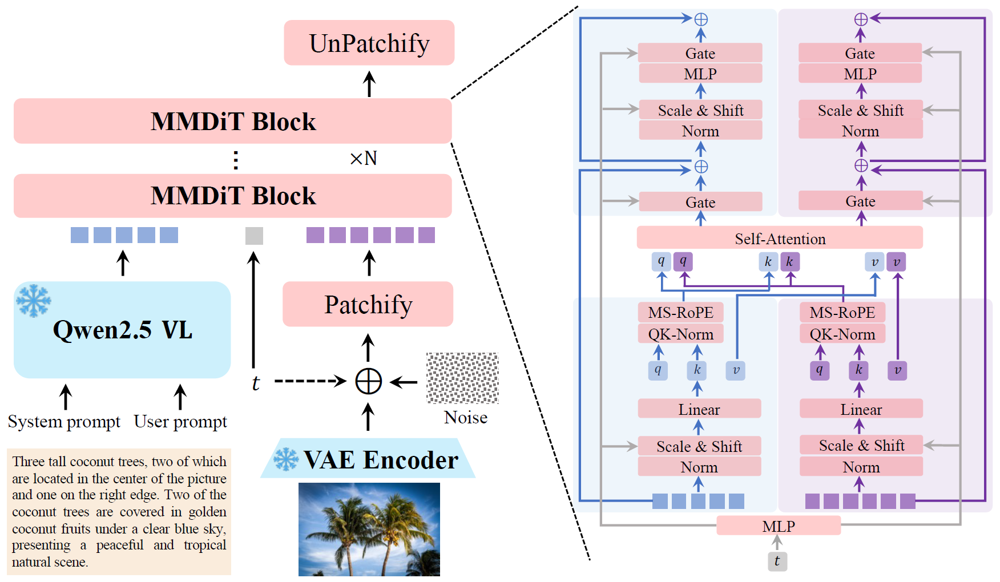
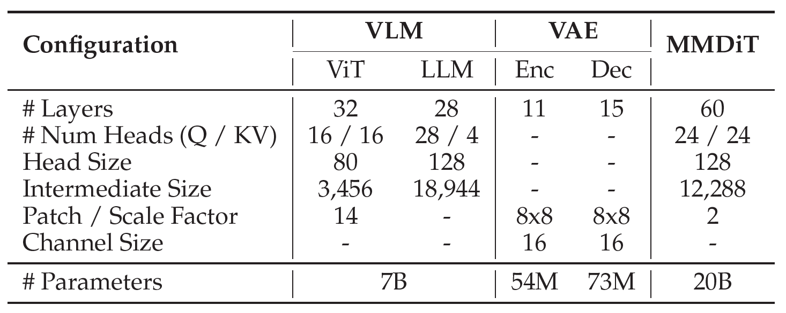
Lumos-1: On Autoregressive Video Generation from a Unified Model Perspective
Hangjie Yuan, Weihua Chen, Jun Cen, Hu Yu, Jingyun Liang, Shuning Chang, Zhihui Lin, Tao Feng, Pengwei Liu, Jiazheng Xing, Hao Luo, Jiasheng Tang, Fan Wang, Yi Yang
DAMO Academy, Alibaba Group, Hupan Lab, Zhejiang University, Tsinghua University
arXiv, 2025
It employs LLM architecture to achieve auto-regressive video generation with some improvement on RoPE and masking strategy.
- Structure: Llama with a new RoPE strategy to model multimodal spatiotemporal dependency.
- Tokenizer: Cosmos's visual tokenizer with spatiotemporal compression rates of 8x8x4; Chameleon's text encoder.
- Model size: 0.5B, 1B, and 3B.
MAGI-1: Autoregressive Video Generation at Scale
Hansi Teng, Hongyu Jia, Lei Sun, Lingzhi Li, Maolin Li, Mingqiu Tang, Shuai Han, Tianning Zhang, W.Q. Zhang, Weifeng Luo, Xiaoyang Kang, Yuchen Sun, Yue Cao, Yunpeng Huang, Yutong Lin, Yuxin Fang, Zewei Tao, Zheng Zhang, Zhongshu Wang, Zixun Liu, Dai Shi, Guoli Su, Hanwen Sun, Hong Pan, Jie Wang, Jiexin Sheng, Min Cui, Min Hu, Ming Yan, Shucheng Yin, Siran Zhang, Tingting Liu, Xianping Yin, Xiaoyu Yang, Xin Song, Xuan Hu, Yankai Zhang, Yuqiao Li
Sand AI
arXiv, 2025
It achieves chunk-wise auto-regressive video generation by employing transformer-based VAE, progressive-noise causal modeling with flow matching, advanced attention/distillation techniques to enable streaming-capable video generation with fixed peak inference costs regardless of video length.
- VAE training. (1) Stage 1: use training data of fixed-size videos with 256x256 resolution and 16 frames; (2) Stage 2: use mixed training data of images and 16-frame videos, and use variable resolution and aspect ratio. Training loss: L = L_1 + L_KL + L_LPIPS + L_GAN.
- VAE inference. Use sliding window with size of 256x256 with a stride of 192 (25% overlap). Sliding windows are not applied to temporal frames.
- Model structure. It is based on DiT with some modifications: (1) Use T5 as the text encoder; (2) Use learnable 3D RoPE to encode temporal positional information; (3) Use new kernel called Flexible-Flash-Attention; (4) Replace multi-head attention by grouped-query attention; (5) Apply LayerNorm before and after FFN and use SwiGLU to stabilize training; (6) Constrain scaling value of AdaLN to [-1, 1] to stabilize training.
- Guidance. output = (1 - w_prev) * output_current + (w_prev - w_text) * output_prev + w_text * output_prev (see the paper for details).
- Prompt enhancement for inference. Use distilled MLLM to enhance prompts. (1) Stage 1: analyze and describe the image content; (2) Stage 2: predict the temporal evolution of the scene or objects in the first frame, such as actions, motion trajectories, and transitions.
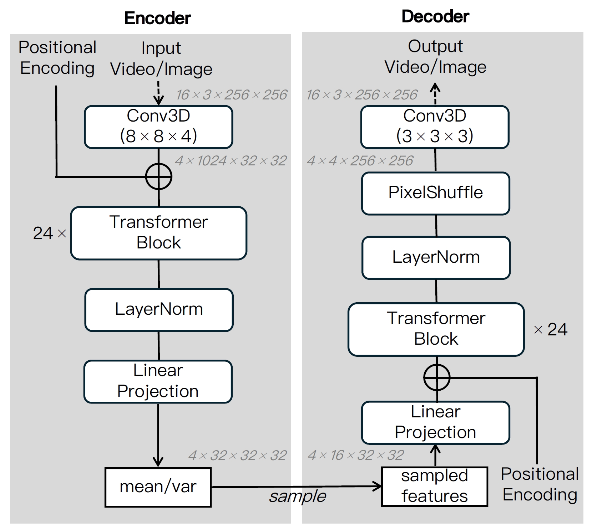
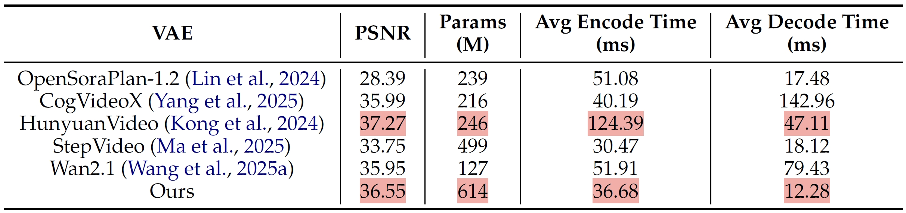
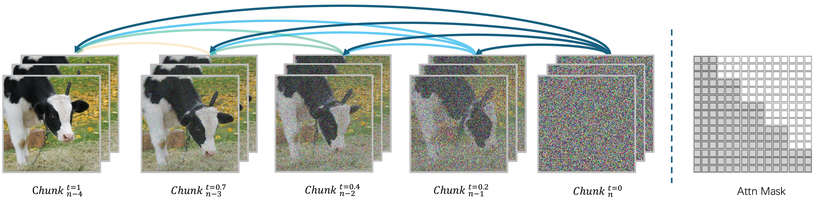
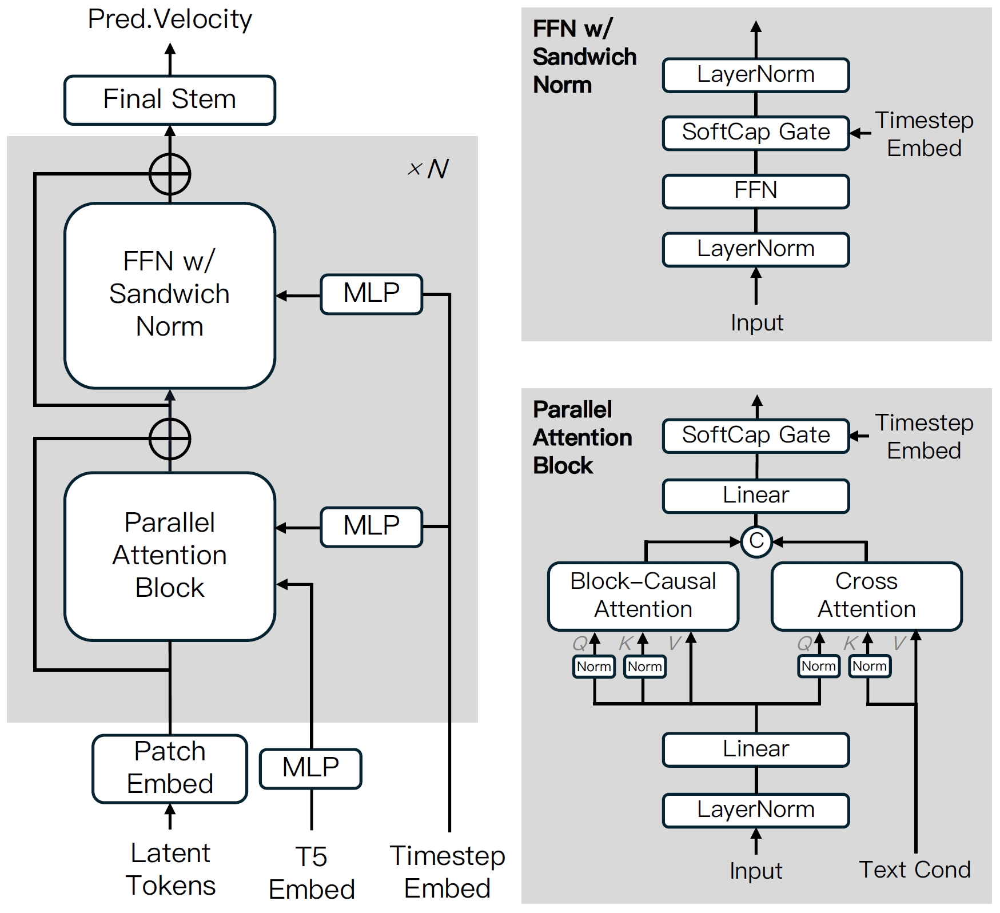
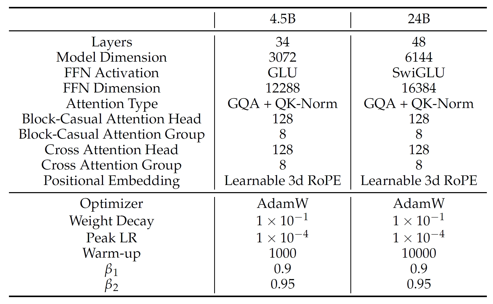
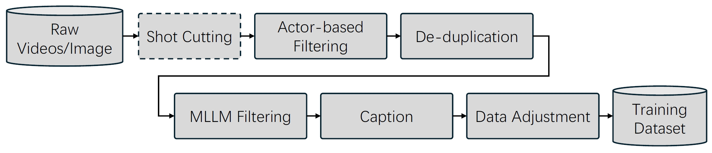
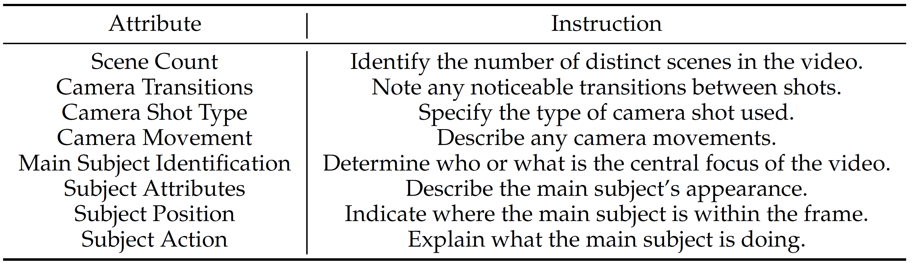
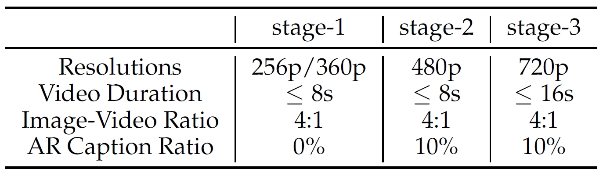
SimpleAR: Pushing the Frontier of Autoregressive Visual Generation through Pretraining, SFT, and RL
Junke Wang, Zhi Tian, Xun Wang, Xinyu Zhang, Weilin Huang, Zuxuan Wu, Yu-Gang Jiang
Fudan University, ByteDance Seed
arXiv, 2025
Apr 15, 2025 | SimpleAR | code
A vanilla, open-sourced AR model (0.5B) for 1K text-to-image generation, trained by pre-training, SFT, RL (GRPO), and acceleration.
- Structure. Use Qwen structure and taking Cosmos as the visual tokenizer with 64K codebook and 16 ratio downsampling.
- Training stages. (1) Pre-training on 512 resolution; (2) SFT on 1024 resolution; (3) RL on 1024 resolution.
- Use LLM initialization does not improve DPG-Bench performance.
- Use 2D RoPE will not improve performance, but is necessary for dynamic resolution generation.
- Use GRPO with CLIP as the reward model improves more than using HPS v2.
Seedream 3.0 Technical Report
ByteDance Seed Vision Team
ByteDance
arXiv, 2025
Apr 15, 2025 | Seedream 3.0
ByteDance Seed Vision Team's text-to-image generation model, improving Seedream 2.0 by representation alignment, larger reward models.
- Propose defect-aware training: stop gradient on watermarks, subtitles, overlaid text, mosaic pattern.
- Introduce a representation alignment loss: cosine distance between the feature of MMDiT and DINOv2-L.
- Find scaling property of VLM-based reward model.
- Other improvements: (1) mixed-resolution training; (2) cross-modality RoPE; (3) diverse aesthetic captions in SFT.
Seaweed-7B: Cost-Effective Training of Video Generation Foundation Model
ByteDance Seaweed Team
ByteDance
arXiv, 2025
Apr 11, 2025 | Seaweed-7B
ByteDance Seaweed Team's text-to-video and image-to-video generation model (7B), trained on O(100M) videos using 665K H100 GPU hours.
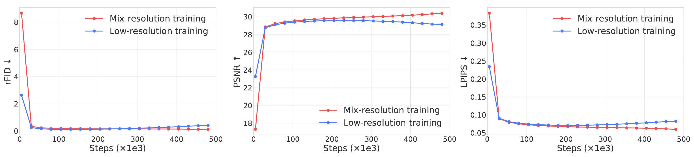 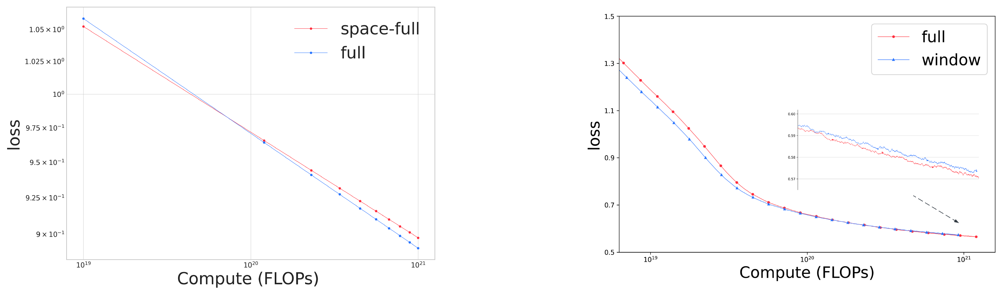 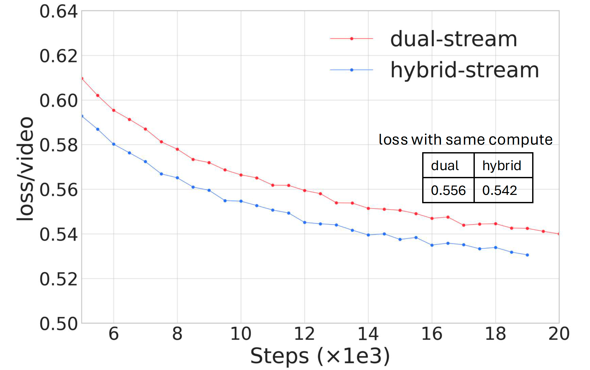


Wan: Open and Advanced Large-Scale Video Generative Models
Tongyi Wanxiang
Alibaba
arXiv, 2025
Alibaba Tongyi Wanxiang's text-to-video and image-to-video generation models (14B) with DiT structure.
Data procssing pipeline. Fundamental dimensions: text, aesthetic, NSFW score, watermark and logo, black border, overexposure, synthetic image, blur, duration and resolution. Visual quality: clustering, scoring. Motion quality: optimal motion, medium-quality motion, static videos, camera-driven motion, low-quality motion, shaky camera footage. Visual text data: hundreds of millions of text-containing images by rendering Chinese characters on a pure white background and large amounts from real-world data. Captions: celebrities, landmarks, movie characters, object counting, OCR, camera angle and motion, categories, relational understanding, re-caption, editing instruction caption, group image description, human-annotated captions.
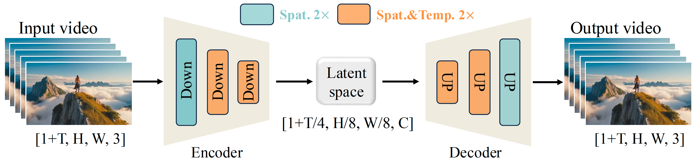
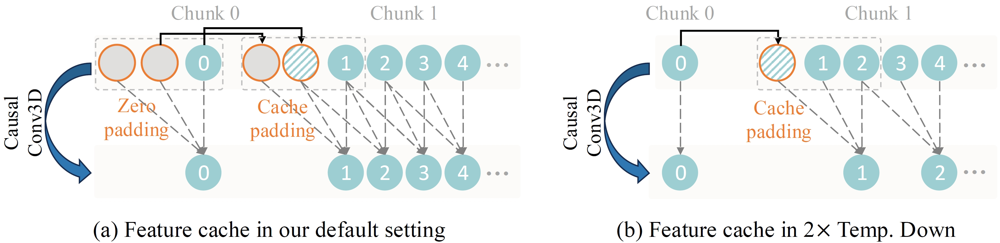
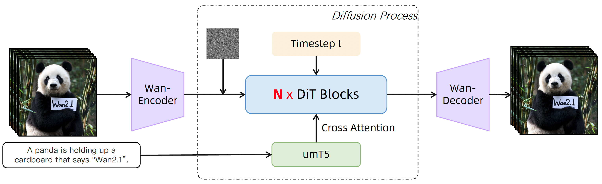

Step-Video-TI2V Technical Report: A State-of-the-Art Text-Driven Image-to-Video Generation Model
Step-Video Team
StepFun
arXiv, 2025
Mar 14, 2025 | Step-Video-TI2V | code
StepFun's image-to-video generation model (30B), trained upon Step-Video-T2V, by incorporating conditions of motion and channel-concat image.

Seedream 2.0: A Native Chinese-English Bilingual Image Generation Foundation Model
ByteDance's Seed Vision Team
ByteDance
arXiv, 2025
Mar 10, 2025 | Seedream2.0
ByteDance Seed Vision Team's image generation model that employs MMDiT structure and has Chinese-English bilingual capability.
- Structure innovation: self-developed bilingual LLM and ByT5 as text encoders; self-developed VAE; learned positional embeddings on text tokens and scaled 2D RoPE on image tokens.
- Training stages: pre-training => continue training => supervised fine-tuning => human feedback alignment.
- Inference stages: user prompt => prompt engineering => text encoding => generation => refinement => output.
- User experience platform: Doubao & Dreamina.

Is Noise Conditioning Necessary for Denoising Generative Models?
Qiao Sun, Zhicheng Jiang, Hanhong Zhao, Kaiming He
MiT
International Conference on Machine Learning (ICML), 2025
Feb 18, 2025 | uEDM
Theoretical and empirical analysis on denoising diffusion models without a timestep input for image generation.
- Many denoising generative models perform robustly even in the absence of noise conditioning.
- Flow-based ones can even produce improved results without noise conditioning.
Step-Video-T2V Technical Report: The Practice, Challenges, and Future of Video Foundation Model
Step-Video Team
StepFun
arXiv, 2025
Feb 14, 2025 | Step-Video-T2V | code
StepFun's open-sourced model (30B) with DiT structure for text-to-video generation.
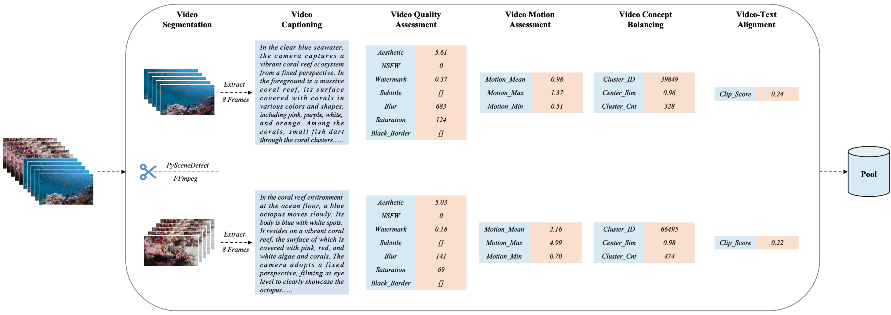 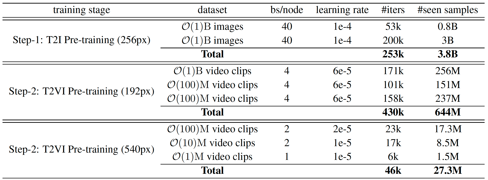


Flow Matching Guide and Code
Yaron Lipman, Marton Havasi, Peter Holderrieth, Neta Shaul, Matt Le, Brian Karrer, Ricky T. Q. Chen, David Lopez-Paz, Heli Ben-Hamu, Itai Gat
FAIR at Meta, MIT CSAIL, Weizmann Institute of Science
arXiv, 2024
Dec 09, 2024 | Flow Matching Guide | code
It offers a comprehensive and self-contained review of flow matching, covering its mathematical foundations, design choices, and extensions.
Infinity: Scaling Bitwise AutoRegressive Modeling for High-Resolution Image Synthesis
Jian Han, Jinlai Liu, Yi Jiang, Bin Yan, Yuqi Zhang, Zehuan Yuan, Bingyue Peng, Xiaobing Liu
ByteDance
Conference on Computer Vision and Pattern Recognition (CVPR), 2025
Dec 05, 2024 | Infinity | code
It improves VAR by applying bitwise modeling that makes vocabulary "infinity" to open up new possibilities of discrete text-to-image generation.
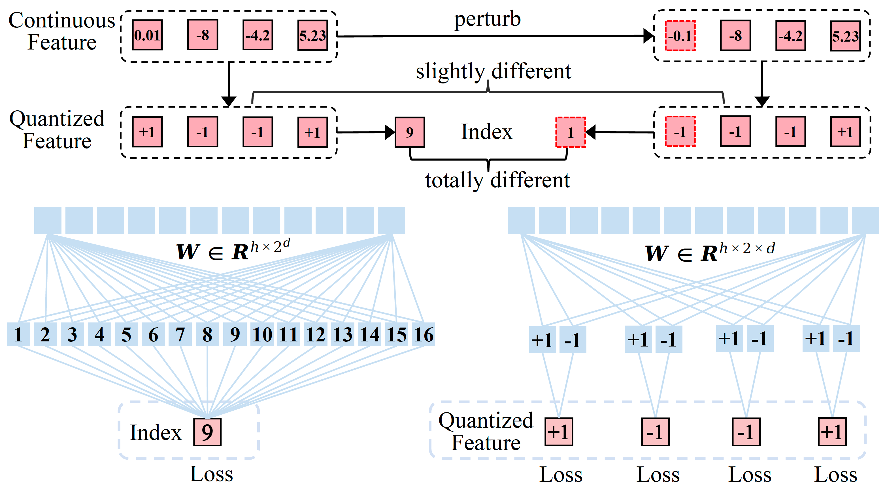 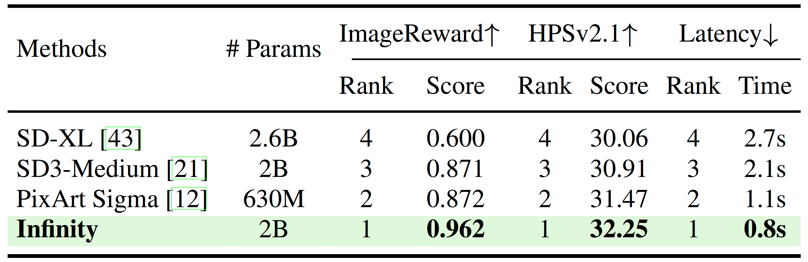 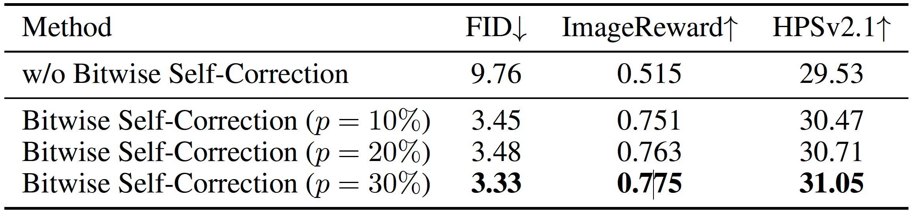


HunyuanVideo: A Systematic Framework For Large Video Generative Models
Hunyuan Multimodal Generation Team
Tencent
arXiv, 2024
Dec 03, 2024 | HunyuanVideo | code
Tencent Hunyuan Team's open-sourced text-to-video and image-to-video generation model (13B) with diffusion transformer (FLUX structure).
Movie Gen: A Cast of Media Foundation Models
Movie Gen Team
Meta
arXiv, 2024
Oct 17, 2024 | Movie Gen
Meta Movie Gen Team's diffusion transformer-based model (30B) for 16s / 1080p / 16fps video and synchronized audio generation.
Fluid: Scaling Autoregressive Text-to-image Generative Models with Continuous Tokens
Lijie Fan, Tianhong Li, Siyang Qin, Yuanzhen Li, Chen Sun, Michael Rubinstein, Deqing Sun, Kaiming He, Yonglong Tian
Google DeepMind, MIT
International Conference on Learning Representations (ICLR), 2025
Oct 17, 2024 | Fluid
It shows auto-regressive models with continuous tokens beat discrete tokens counterpart, and finds some empirical observations during scaling.
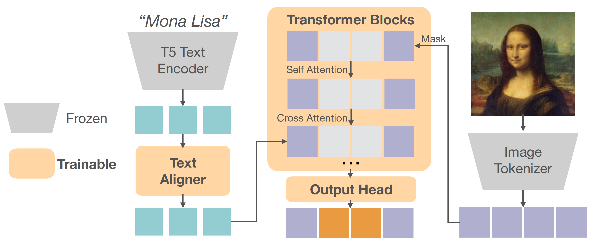 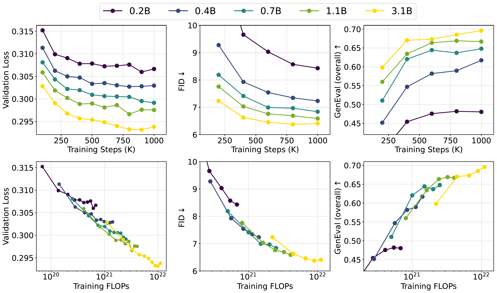


Scaling Diffusion Transformers to 16 Billion Parameters
Zhengcong Fei, Mingyuan Fan, Changqian Yu, Debang Li, Junshi Huang
Kunlun Inc.
arXiv, 2024
It proposes diffusion transformer (16B) with Mixture-of-Experts by inserting experts into DiT blocks for image generation.
- Incorporating shared expert routing improves convergence and performance, but the improvement is little when using more than one.
- Increasing experts reduces loss but introduces more loss spikes.

Autoregressive Model Beats Diffusion: Llama for Scalable Image Generation
Peize Sun, Yi Jiang, Shoufa Chen, Shilong Zhang, Bingyue Peng, Ping Luo, Zehuan Yuan
The University of Hong Kong, ByteDance
arXiv, 2024
Jun 10, 2024 | LlamaGen | code
It shows that applying "next-token prediction" to vanilla autoregressive language models can achieve good image generation performance.
- It trains a discrete visual tokenizer that is competitive to the continuous ones, e.g., SD VAE, SDXL VAE, Consistency Decoder from OpenAI.
- It shows that vanilla autoregressive models, e.g., LlaMA, without visual inductive biases can serve as the basis of image generation system.
- Training data. 50M subset of LAION-COCO and 10M internal high aesthetics quality images.
Visual Autoregressive Modeling: Scalable Image Generation via Next-Scale Prediction
Keyu Tian, Yi Jiang, Zehuan Yuan, Bingyue Peng, Liwei Wang
Peking University, ByteDance
Advances in Neural Information Processing Systems (NeurIPS), 2024
NeurIPS 2024 best paper award.
It improves auto-regressive image generation on image quality, inference speed, data efficiency, and scalability, by proposing next-scale prediction.
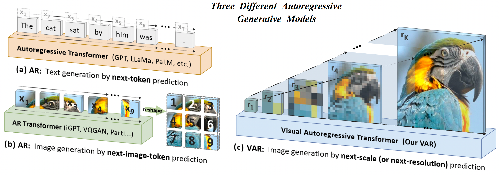 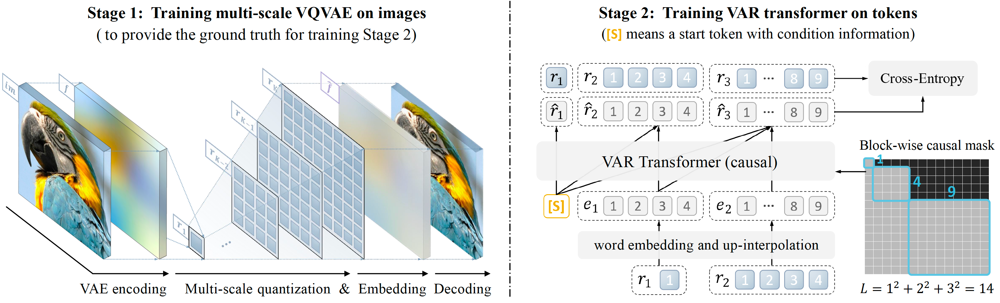

SDXL: Improving Latent Diffusion Models for High-Resolution Image Synthesis
Dustin Podell, Zion English, Kyle Lacey, Andreas Blattmann, Tim Dockhorn, Jonas Müller, Joe Penna, Robin Rombach
Stability AI
International Conference on Learning Representations (ICLR), 2024
It improves older SD by employing larger UNet backbone, resolution conditions, two text encoders, and a refinement model.
Architecture of SDXL:.
(1) It has 2.6B parameters with different transformer blocks, SD 1.4/1.5/2.0/2.1 has about 860M parameters.
(2) It uses two text encoders: OpenCLIP ViT-bigG & CLIP ViT-L.
(3) The embeddings of height & width and cropping top & left and bucketing heigh & width are added to timestep embeddings as conditions.
(4) It improves VAE by employing EMA and a larger batchsize of 256.
(5) It employs a refinement model of SDEdit to refine visual details.
Training stages: (1) reso=256x256, steps=600,000, batchsize=2048; (2) reso=512x512, steps=200,000; (3) mixed resolution and aspect ratio training.
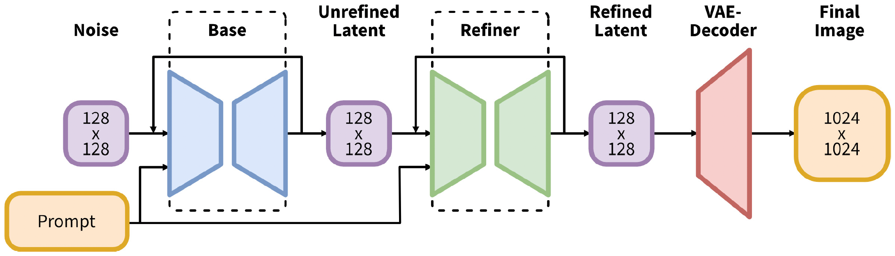
Scalable Diffusion Models with Transformers
William Peebles, Saining Xie
UC Berkeley, New York University
International Conference on Computer Vision (ICCV), 2023
It replaces the conventional U-Net structure with transformer for scalable image generation, the timestep and condition are injected by adaLN-Zero.

Flow Matching for Generative Modeling
Yaron Lipman, Ricky T. Q. Chen, Heli Ben-Hamu, Maximilian Nickel, Matt Le
Meta AI (FAIR), Weizmann Institute of Science
International Conference on Learning Representations (ICLR), 2023
Oct 06, 2022 | Flow Matching
It proposes a simple yet powerful framework for training continuous-time generative models by directly learning the vector field of an optimal transport path between data and noise, enabling fast training, stable optimization, and high sample quality. It has over 1,800 citations (as of Aug 2025).
It trains continuous normalizing flows using conditional probability paths, resulting in fast training, high sample quality, and efficient sampling.
Understanding Diffusion Models: A Unified Perspective
Calvin Luo
Google Brain
arXiv, 2022
Aug 25, 2022 | Unified Perspective
Introduction to VAE, DDPM, score-based generative model, guidance from a unified generative perspective.
CogVideo: Large-scale Pretraining for Text-to-Video Generation via Transformers
Wenyi Hong, Ming Ding, Wendi Zheng, Xinghan Liu, Jie Tang
Tsinghua University, BAAI
International Conference on Learning Representations (ICLR), 2023
May 29, 2022 | CogVideo | code
It proposes a transformer-based video generation model (9B) that performs auto-regressive frame generation and recursive frame interpolation
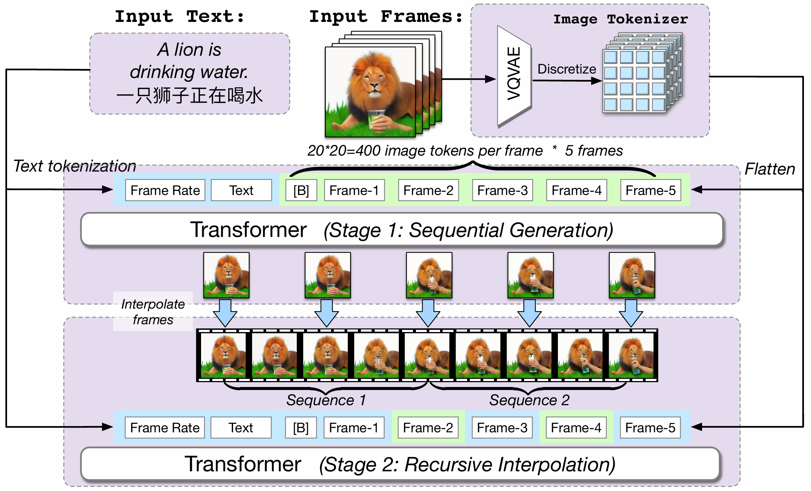
High-Resolution Image Synthesis with Latent Diffusion Models
Robin Rombach, Andreas Blattmann, Dominik Lorenz, Patrick Esser, Björn Ommer
Heidelberg University, Runway ML
Conference on Computer Vision and Pattern Recognition (CVPR), 2022
It significantly advances visual generation field by enabling efficient, high-quality synthesis via latent-space diffusion. It has over 20,000 citations (as of Jul 2025).
It achieves efficient high-resolution image generation by applying diffusion and denoising processes in the compressed VAE latent space.

Classifier-Free Diffusion Guidance
Jonathan Ho, Tim Salimans
Google Research, Brain team
Advances in Neural Information Processing Systems (NeurIPS workshop), 2021
Dec 08, 2021 | CFG
It improves conditional image generation with classifier-free condition guidance by jointly training a conditional model and an unconditional model.
Denoising Diffusion Implicit Models
Jiaming Song, Chenlin Meng, Stefano Ermon
Stanford University
International Conference on Learning Representations (ICLR), 2021
Accelerate sampling of diffusion models by introducing a non-Markovian, deterministic process that achieves high-quality results with fewer steps while preserving training consistency.
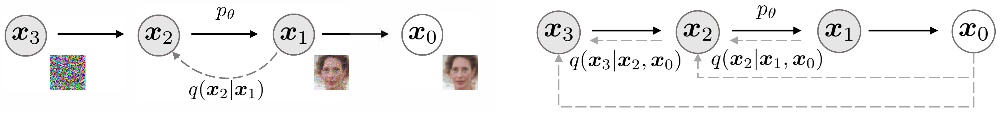 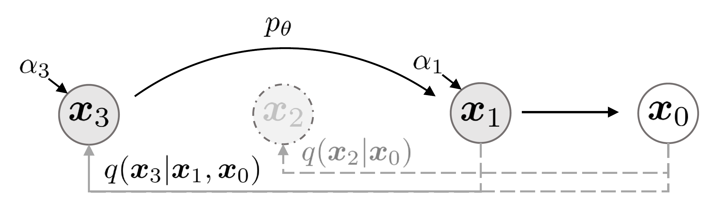
Denoising Diffusion Probabilistic Models
Jonathan Ho, Ajay Jain, Pieter Abbeel
UC Berkeley
Advances in Neural Information Processing Systems (NeurIPS), 2020
It shows that a simple, theoretically grounded denoising process can rival and even surpass GANs in sample quality, sparking an explosion of diffusion-based research and applications across images, videos, audio, and beyond. It has over 20,000 citations (as of Jul 2025).
It proposes denoising diffusion probabilistic models that iteratively denoises data from random noise.
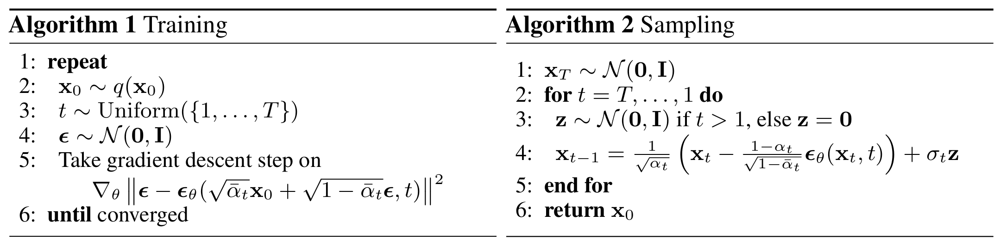
Generating Diverse High-Fidelity Images with VQ-VAE-2
Ali Razavi, Aaron van den Oord, Oriol Vinyals
DeepMind
Advances in Neural Information Processing Systems (NeurIPS), 2019
Jun 02, 2019 | VQ-VAE-2
In order to generate large scale images efficiently, it improves VQ-VAE by employing a hierarchical organization.
- Structure: (1) a top-level encoder to learn top-level priors from images; (2) a bottom-level encoder to learn bottom-level priors from images and top-level priors; (3) a decoder to generate images from both top-level and bottom-level priors.
- Training stage 1: training the top-level encoder and the bottom-level encoder to encode images onto the two levels of discrete latent space.
- Training stage 2: training PixelCNN to predict bottom-level priors from top-level priors, while fixing the two encoders.
- Sampling: (1) sampling a top-level prior; (2) predicting bottom-level prior from the top-level prior using the trained PixelCNN; (3) generating images from both the top-level and the bottom-level priors by the trained decoder.
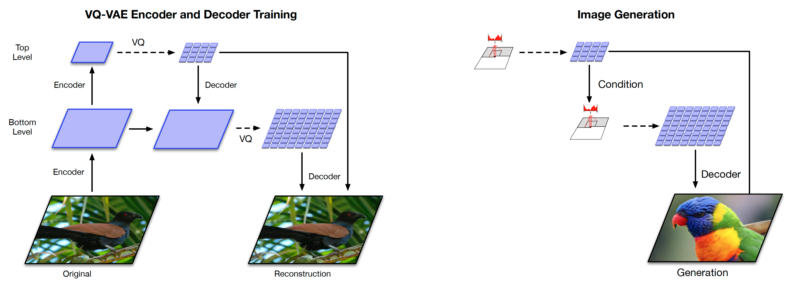
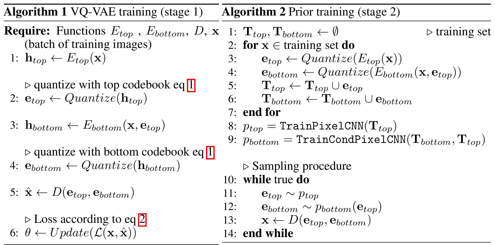
Neural Discrete Representation Learning
Aaron van den Oord, Oriol Vinyals, Koray Kavukcuoglu
DeepMind
Advances in Neural Information Processing Systems (NeurIPS), 2017
Nov 02, 2017 | VQ-VAE
It proposes vector quantised variational autoencoder to generate discrete codes while the prior is also learned.
- Posterior collapse problem: a strong decoder and a strong KL constraint could make the learned posterior q(z|x) very close to prior p(z), so that the conditional generation task collapses to an unconditional generation task.
- How VQ-VAE avoids the collapse problem by employing discrete codes/latents? (1) It learns q(z|x) by choosing one from some candidates rather than directly generating a simple prior; (2) The learned q(z|x) is continuous but p(z) is discrete, so the encoder can not be "lazy".
- Optimization objectives: (1) The decoder is optimized by a recontruction loss; (2) The encoder is optimized by a reconstruction loss and a matching loss; (3) The embedding is optimized by a matching loss.
- How to back-propagate gradient with quantization exists? Straight-Through Estimator: directly let the graident of loss to the quantized embedding equal to the gradient of loss to the embedding that before being quantized.
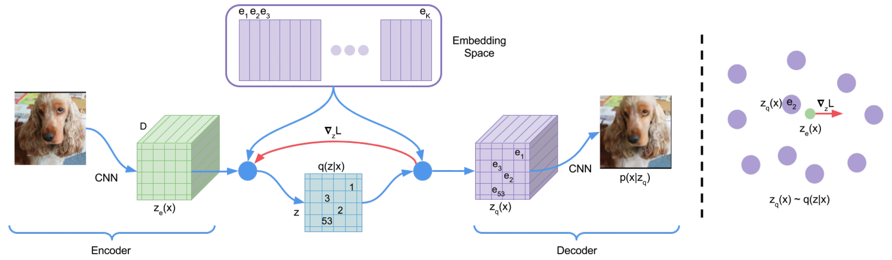
Generation: Reinforcement Learning
DiffusionOPD: A Unified Perspective of On-Policy Distillation in Diffusion Models
Quanhao Li, Junqiu Yu, Kaixun Jiang, Yujie Wei, Zhen Xing, Pandeng Li, Ruihang Chu, Shiwei Zhang, Yu Liu, Zuxuan Wu
Fudan University, Wan Team, Alibaba Group
arXiv, 2026
May 14, 2026 | DiffusionOPD
It distills task-specific teachers into a student on its own rollout using a closed-form per-step KL objective, surpassing joint & cascade multi-task RL.
RDPO: Real Data Preference Optimization for Physics Consistency Video Generation
Wenxu Qian, Chaoyue Wang, Hou Peng, Zhiyu Tan, Hao Li, Anxiang Zeng
Fudan University, Shopee Inc
arXiv, 2025
Jun 23, 2025 | RDPO
It constructs positive DPO data by reversing-then-denoising real data to overcome the large domain gap between synthetic data and real data.
- DPO data construction. Positive samples: reversing-then-denoising real data. Negative samples: denoising from noise.
- Rejection sampling. select the instance that is closest (L2 distance) to model's own sample at the same timestep.
- Progressive training. Apply reversing-then-denoising sequentially from heavy to light. 8K preference pairs.
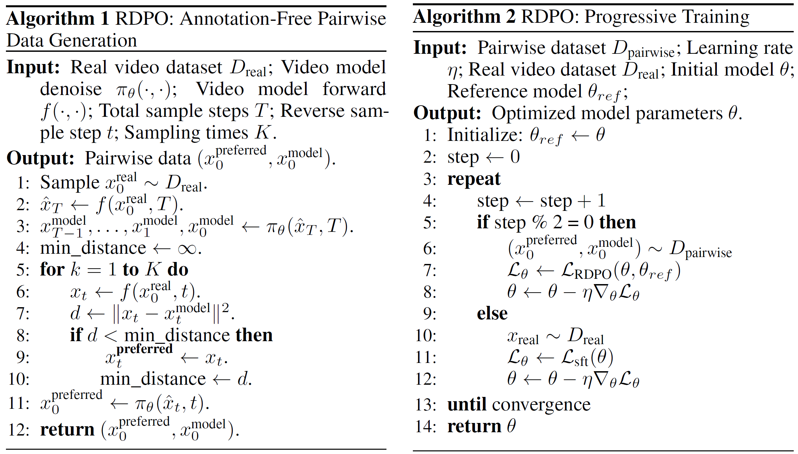
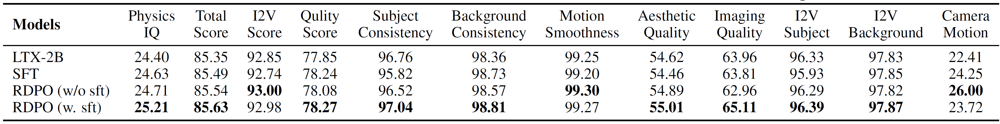
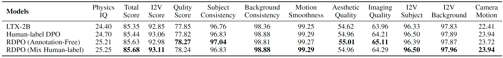
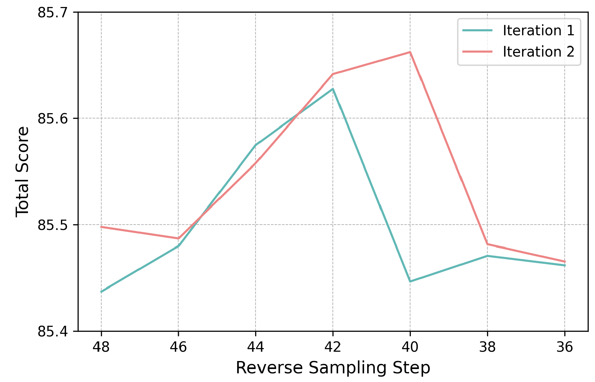
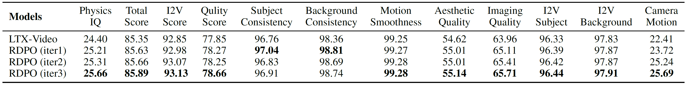
D-Fusion: Direct Preference Optimization for Aligning Diffusion Models with Visually Consistent Samples
Zijing Hu, Fengda Zhang, Kun Kuang
Zhejiang University, Nanyang Technological University
International Conference on Machine Learning (ICML), 2025
May 28, 2025 | D-Fusion | code
It constructs new winning samples that are visually consistent with losing samples while aligning with winning samples in prompt-following.
- Method details. (1) It extracts a mask by averaging cross-attention maps across all heads and blocks in the first up-sampling layer. (2) It binarizes the mask by applying a fixed threshold, generating segmentation of attention, i.e., the importance map for the prompt. (3) It fuses the self-attention key and value by applying the segmentation mask to winning samples and losing samples.
DanceGRPO: Unleashing GRPO on Visual Generation
Zeyue Xue, Jie Wu, Yu Gao, Fangyuan Kong, Lingting Zhu, Mengzhao Chen, Zhiheng Liu, Wei Liu, Qiushan Guo, Weilin Huang, Ping Luo
ByteDance Seed, The University of Hong Kong
arXiv, 2025
May 12, 2025 | DanceGRPO | code
It reformulates ODE sampling to SDE, and adapts GRPO to visual generation, validating on different models, tasks, and reward models.
- It omits the KL regularization of GRPO because it brings little benefits.
- It assigns shared initialization noise to samples from the same prompt to solve reward hacking and training instability.
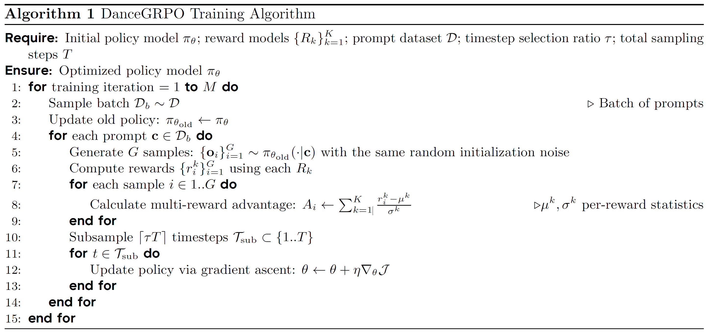
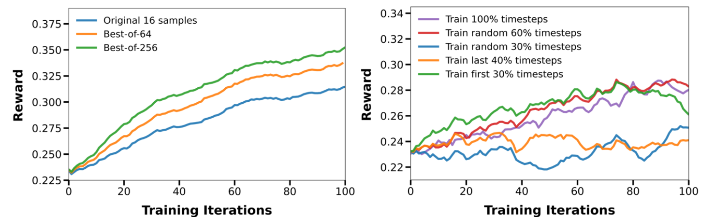
InPO: Inversion Preference Optimization with Reparametrized DDIM for Efficient Diffusion Model Alignment
Yunhong Lu, Qichao Wang, Hengyuan Cao, Xierui Wang, Xiaoyin Xu, Min Zhang
Zhejiang University, Shanghai Institute for Advanced Study-Zhejiang University
Conference on Computer Vision and Pattern Recognition (CVPR), 2025
Instead of maximizing accumulative rewards, it only maximizes the reward of the latent variable that have a strong correlation with the data.
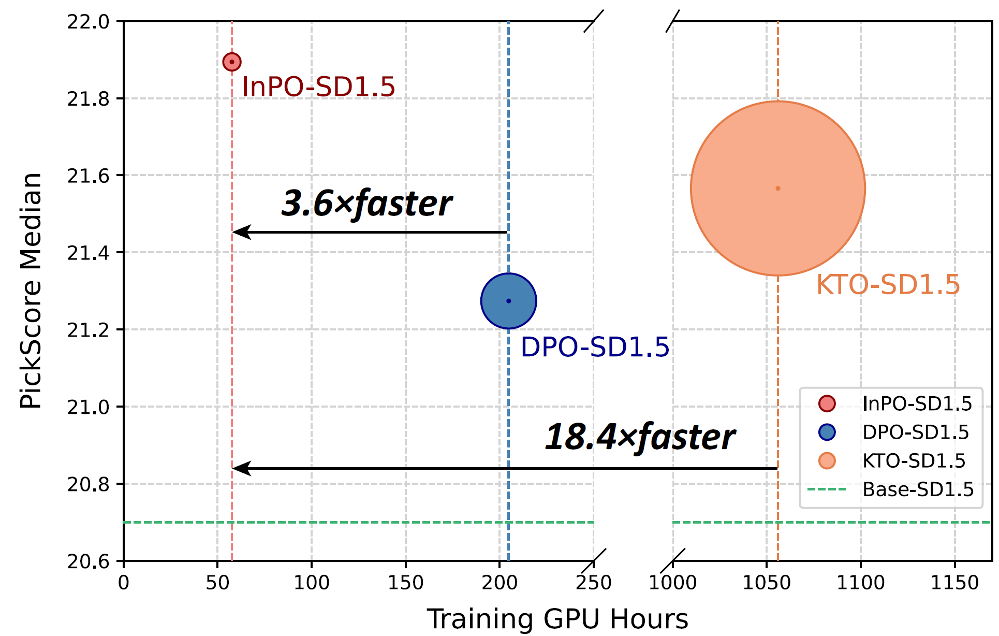
Preference Alignment on Diffusion Model: A Comprehensive Survey for Image Generation and Editing
Sihao Wu, Xiaonan Si, Chi Xing, Jianhong Wang, Gaojie Jin, Guangliang Cheng, Lijun Zhang, Xiaowei Huang
University of Liverpool, Institute of Software Chinese Academy of Sciences, University of Edinburgh, University of Bristol, University of Exeter
arXiv, 2025
Feb 10, 2025 | Survey on Pre. Ali.
A survey on preference alignment of image generation and editing.

Calibrated Multi-Preference Optimization for Aligning Diffusion Models
Kyungmin Lee, Xiahong Li, Qifei Wang, Junfeng He, Junjie Ke, Ming-Hsuan Yang, Irfan Essa, Jinwoo Shin, Feng Yang, Yinxiao Li1
Google DeepMind, KAIST, Google, Google Research, Georgia Institute of Technology
Conference on Computer Vision and Pattern Recognition (CVPR), 2025
Feb 04, 2025 | CaPO
It proposes calibrated preference optimization by calculating average win-rate of each sample to other samples as the reward.
Improving Video Generation with Human Feedback
Jie Liu, Gongye Liu, Jiajun Liang, Ziyang Yuan, Xiaokun Liu, Mingwu Zheng, Xiele Wu, Qiulin Wang, Wenyu Qin, Menghan Xia, Xintao Wang, Xiaohong Liu, Fei Yang, Pengfei Wan, Di Zhang, Kun Gai, Yujiu Yang, Wanli Ouyang
CUHK, Tsinghua University, Kuaishou Technology, Shanghai Jiao Tong University, Shanghai AI Lab
arXiv, 2025
Jan 23, 2025 | Flow-RWR, Flow-DPO | code
It introduces a human preference video dataset, and adapts diffusion-based reinforcement learning to flow-based video generation models.
Personalized Preference Fine-tuning of Diffusion Models
Meihua Dang, Anikait Singh, Linqi Zhou, Stefano Ermon, Jiaming Song
Stanford University, Luma AI
Conference on Computer Vision and Pattern Recognition (CVPR), 2025
Jan 11, 2025 | PPD
It introduces personalized preference alignment by injecting VLM embeddings into diffusion models through cross-attention.
- VLM. Use LLaVA-OneVision to extract user preference embeddings from few-shot pairwise preference examples for each user.
- Cross-attention. Similar to IP-Adapter, it injects VLM-based user embeddin via cross-attention, and adds the embeddings to text embeddings.
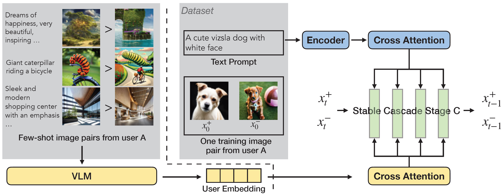
VideoDPO: Omni-Preference Alignment for Video Diffusion Generation
Runtao Liu, Haoyu Wu, Zheng Ziqiang, Chen Wei, Yingqing He, Renjie Pi, Qifeng Chen
HKUST, Renmin University of China, Johns Hopkins University
Conference on Computer Vision and Pattern Recognition (CVPR), 2025
Dec 18, 2024 | VideoDPO | code
It builds a metric for quality and semantic alignment evaluation, then uses the metric to build DPO data for preference alignment of video generation.
PrefPaint: Aligning Image Inpainting Diffusion Model with Human Preference
Kendong Liu, Zhiyu Zhu, Chuanhao Li, Hui Liu, Huanqiang Zeng, Junhui Hou
City University of Hong Kong, Yale University, Saint Francis University, Huaqiao University
Advances in Neural Information Processing Systems (NeurIPS), 2024
Oct 29, 2024 | PrefPaint | code
It trains a reward model on 51K images with human preferences, and uses it to perform reinforcement learning of diffusion models.
Aesthetic Post-Training Diffusion Models from Generic Preferences with Step-by-step Preference Optimization
Zhanhao Liang, Yuhui Yuan, Shuyang Gu, Bohan Chen, Tiankai Hang, Mingxi Cheng, Ji Li, Liang Zheng
The Australian National University, University of Liverpool, Southeast University, Microsoft, Microsoft Research Asia
Conference on Computer Vision and Pattern Recognition (CVPR), 2025
It trains a noise-aware reward model, and constructs DPO data from noisy samples.
- DPO data construcion. Start from a initial noise, denoise to some steps and build DPO samples from a noise-aware reward model.
Curriculum Direct Preference Optimization for Diffusion and Consistency Models
Florinel-Alin Croitoru, Vlad Hondru, Radu Tudor Ionescu, Nicu Sebe, Mubarak Shah
University of Bucharest, Romania, University of Trento, Italy, University of Central Florida, US
Conference on Computer Vision and Pattern Recognition (CVPR), 2025
May 22, 2024 | Curriculum DPO | code
It applies curriculum learning to DPO by learning from win samples and lose samples with their differences from small to large.
InstructVideo: Instructing Video Diffusion Models with Human Feedback
Hangjie Yuan, Shiwei Zhang, Xiang Wang, Yujie Wei, Tao Feng, Yining Pan, Yingya Zhang, Ziwei Liu, Samuel Albanie, Dong Ni
Zhejiang University, Alibaba Group, Tsinghua University, Singapore University of Technology and Design, Nanyang Technological University, University of Cambridge
Conference on Computer Vision and Pattern Recognition (CVPR), 2024
Dec 19, 2023 | InstructVideo | code
It uses HPS v2 to provide reward feedback and train video generation models in an editing manner.
Diffusion Model Alignment Using Direct Preference Optimization
Bram Wallace, Meihua Dang, Rafael Rafailov, Linqi Zhou, Aaron Lou, Senthil Purushwalkam, Stefano Ermon, Caiming Xiong, Shafiq Joty, Nikhil Naik
Salesforce AI, Stanford University
Conference on Computer Vision and Pattern Recognition (CVPR), 2024
Nov 21, 2023 | Diffusion-DPO | code
It adapts Direct Preference Optimization (DPO) from large language models to diffusion models.
- Model & dataset. It trains SD1.5 and SDXL1.0 on Pick-a-Pic human preference data consisting of 850K pairs from 59K unique prompts.
- Evaluations are performed on Pick-a-Pic validation set, Partiprompt, and HPS v2.
Training Diffusion Models with Reinforcement Learning
Kevin Black, Michael Janner, Yilun Du, Ilya Kostrikov, Sergey Levine
University of California, Berkeley, Massachusetts Institute of Technology
International Conference on Learning Representations (ICLR), 2024
It applies policy gradient to diffusion models, the reward is estimated from a VLM, to improve its aesthetics.
ImageReward: Learning and Evaluating Human Preferences for Text-to-Image Generation
Jiazheng Xu, Xiao Liu, Yuchen Wu, Yuxuan Tong, Qinkai Li, Ming Ding, Jie Tang, Yuxiao Dong
Tsinghua University, Zhipu AI, Beijing University of Posts and Telecommunications
Advances in Neural Information Processing Systems (NeurIPS), 2023
It trains BLIP on 137K human preference image pairs for preference evaluation and use it to tune models by Reward Feedback Learning (ReFL).


Optimizing Prompts for Text-to-Image Generation
Yaru Hao, Zewen Chi, Li Dong, Furu Wei
Microsoft Research
Advances in Neural Information Processing Systems (NeurIPS), 2023
Dec 19, 2022 | promptist | code
It uses LLM to refine prompts for preference-aligned image generation by taking relevance and aesthetics as rewards.
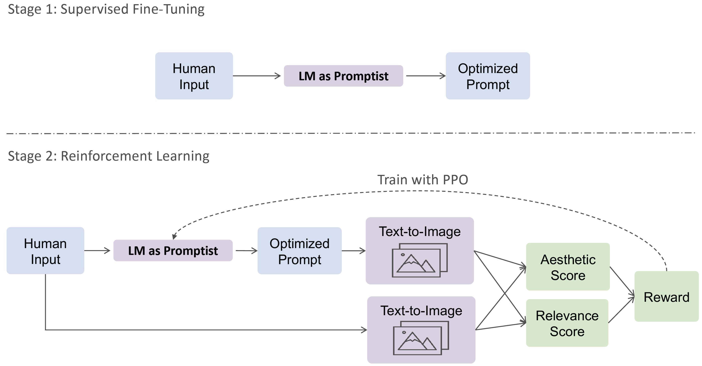
Generation: Inference-Time Improvement
Ideas in Inference-time Scaling can Benefit Generative Pre-training Algorithms
Jiaming Song, Linqi Zhou
Luma AI
arXiv, 2025
Mar 10, 2025 | Inference can Beat Pretraining
Analyze generative pre-training from an inference-first idea, and scaling inference from a perspective of scaling sequence length & refinement steps.
- Pre-training algorithms should have inference-scalability in sequence length and refinement steps.
- Algorithms should scale training efficiently by reduing inference computation.
- One should verify whether the model has enough capacity to represent the target distribution during inference.
- Not scalable in either sequence length or refinement steps: VAE, GAN, Normalizing Flows.
- Scalable in sequence length but not refinement steps: GPT, PixelCNN, MaskGiT, VAR.
- Scalable in refinement steps but not in sequence length: diffusion models, energy-based models, consistency models.
- Scalable in both, with sequence length in the outer loop: AR-Diffusion, Rolling diffusion, MAR.
- Scalable in both, with refinement steps in the outer loop: autoregression distribution smoothing.
Can We Generate Images with CoT? Let's Verify and Reinforce Image Generation Step by Step
Ziyu Guo, Renrui Zhang, Chengzhuo Tong, Zhizheng Zhao, Peng Gao, Hongsheng Li, Pheng-Ann Heng
CUHK, Peking University, Shanghai AI Lab
Conference on Computer Vision and Pattern Recognition (CVPR), 2025
It applies the idea of Chain-of-Thought into image generation and combines it with reinforcement learning to further improve performance.
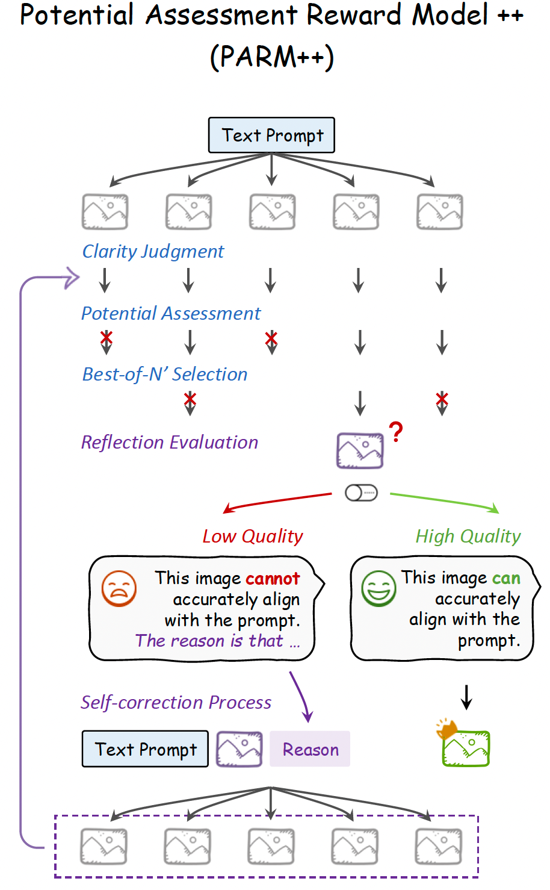
Inference-Time Scaling for Diffusion Models beyond Scaling Denoising Steps
Nanye Ma, Shangyuan Tong, Haolin Jia, Hexiang Hu, Yu-Chuan Su, Mingda Zhang, Xuan Yang, Yandong Li, Tommi Jaakkola, Xuhui Jia, Saining Xie
NYU, MIT, Google
Conference on Computer Vision and Pattern Recognition (CVPR), 2025
Jan 16, 2025 | Inference-Time Scaling Analysis
Analysis on inference-time scaling of diffusion models for image generation from the axes of verifiers and algorithms.
- Use some verifiers to provide feedback: FID, IS, CLIP, DINO; Aesthetic Score Predictor, CLIPScore, ImageReward, Ensemble.
- Use some algorithms to find better noise: Random Search, Zero-Order Search, Search Over Paths.
- Random Search: run using different initial random noise and select the best final result by the verifier.
- Zero-Order Search: run under different random noise around a pivot noise and select the best final result by the verifier, the best one is then served as a new pivot for next round search.
- Search Over Paths: run under different random noise to a specific step, sample noises for each noisy sample and simulate forward process, then perform denoising and select the best candiate using the verifier, continue this process until finish denoising.
- Scaling through search leads to substantial improvement across model sizes.
- No single verifier-algorithm configuration is universally optimal.
- Inference-time search further improves performance of the model which has already been fine-tuned.
- Fewer denoising steps but more searching iterations enables efficient convergence but lower final performance.
- With a fixed inference compute budget, performing search on small models can outperform larger models without search.


Zigzag Diffusion Sampling: Diffusion Models Can Self-Improve via Self-Reflection
Lichen Bai, Shitong Shao, Zikai Zhou, Zipeng Qi, Zhiqiang Xu, Haoyi Xiong, Zeke Xie
The Hong Kong University of Science and Technology (Guangzhou), Mohamed bin Zayed University of Artificial Intelligence, Baidu Inc
International Conference on Learning Representations (ICLR), 2025
Dec 14, 2024 | Z-Sampling | code
It exploits the guidance gap between denoising and inversion by iteratively performing them to improve image generation quality.
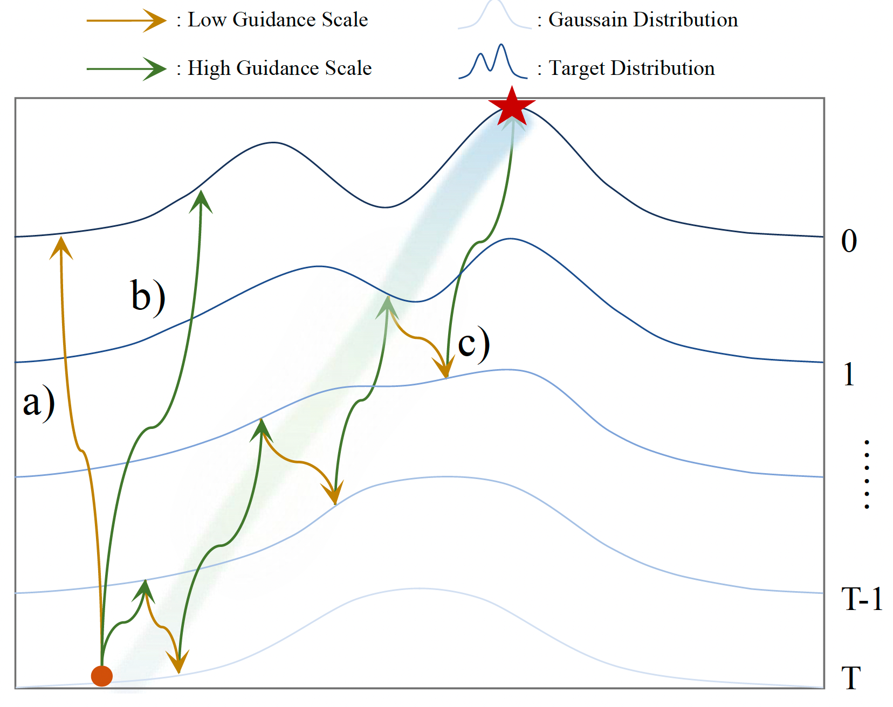
Generation: Acceleration
Adversarial Distribution Matching for Diffusion Distillation Towards Efficient Image and Video Synthesis
Yanzuo Lu, Yuxi Ren, Xin Xia, Shanchuan Lin, Xing Wang, Xuefeng Xiao, Andy J. Ma, Xiaohua Xie, Jian-Huang Lai
Sun Yat-Sen University, ByteDance Seed Vision, Guangdong Provincial Key Laboratory of Information Security Technology, Key Laboratory of Machine Intelligence and Advanced Computing, Pazhou Lab (HuangPu)
International Conference on Computer Vision (ICCV), 2025
Jul 24, 2025 | ADM
This paper replaces reverse-KL-based distillation with adversarial score distribution matching, enabling faster one/few-step image/video generation.
- Adversarial score distribution matching: align real/fake score distribution by a discriminator.
- Adversarial distillation pre-training: warm up the student on the teacher's rollout.
Mean Flows for One-step Generative Modeling
Zhengyang Geng, Mingyang Deng, Xingjian Bai, J. Zico Kolter, Kaiming He
CMU, MIT
Advances in Neural Information Processing Systems (NeurIPS), 2025
May 19, 2025 | MeanFlow | code
It introduces a one-step generative framework that learns an average velocity field via MeanFlow Identity, without distillation or curriculum learning.
Some observations in experiments:
- 25% of sampling \( r\neq t \) performs the best; while 0% (standard Flow Matching) performs much worse.
- A correct JVP is important, i.e., \( \mathrm{jvp}=(v, 0, 1) \).
- \( u_{\theta}(z, r, t) \) takes (t, t-r) as the positional embedding performs the best.
Efficient Diffusion Models: A Survey
Hui Shen, Jingxuan Zhang, Boning Xiong, Rui Hu, Shoufa Chen, Zhongwei Wan, Xin Wang, Yu Zhang, Zixuan Gong, Guangyin Bao, Chaofan Tao, Yongfeng Huang, Ye Yuan, Mi Zhang
The Ohio State University, Indiana University, Fudan University, Hangzhou City University, The University of Hong Kong, Tongji University, The Chinese University of Hong Kong, Peking University
Transactions on Machine Learning Research (TMLR), 2025
Feb 03, 2025 | EffcientDiffSurvey | code
A survey for efficient diffusion models, categorizing advancements across algorithm-level, system-level, and frameworks-level.
Improved Distribution Matching Distillation for Fast Image Synthesis
Tianwei Yin, Michaël Gharbi, Taesung Park, Richard Zhang, Eli Shechtman, Fredo Durand, William T. Freeman
Massachusetts Institute of Technology, Adobe Research
Advances in Neural Information Processing Systems (NeurIPS), 2024
It upgrades DMD by eliminating the regression loss, integrating a GAN objective, and a two-time-scale update rule alongside backward simulation.
- Remove regression loss: reduce cost.
- Stablize training: update fake denoiser 5 times per generator update.
- Surpass DMD: GAN loss on fake-data vs. real-data.
- Build training-inference gap: backward training on self-denoised data rather than noisy real data.
Fast High-Resolution Image Synthesis with Latent Adversarial Diffusion Distillation
Axel Sauer, Frederic Boesel, Tim Dockhorn, Andreas Blattmann, Patrick Esser, Robin Rombach
Stability AI
SIGGRAPH Asia, 2024
Mar 18, 2024 | LADD
It performs distillation of diffusion models in latent space using teacher-synthetic data and optimizing adversarial loss with teacher as discriminator.
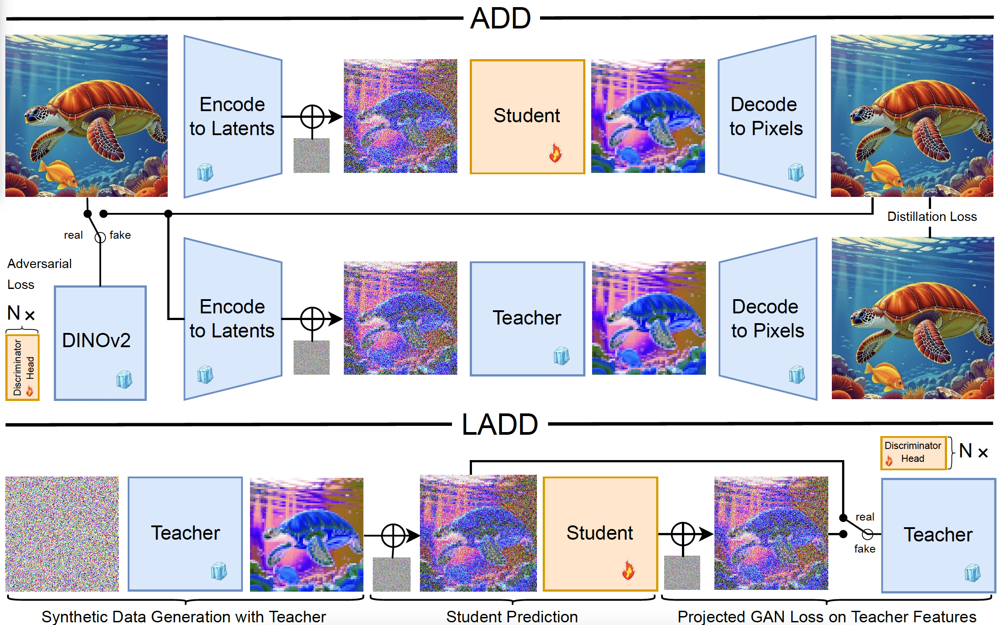
- Conclusion 1: Training on synthetic data works better than real data.
- Conclusion 2: Training on synthetic data only needs the adversarial loss.
- Conclusion 3: Student model size significantly impacts performance, while the benefits of teacher models and data quality plateau.
- Conclusion 4: A good practice: use LoRA for DPO-traning, and apply DPO-LoRA after LADD training.
One-step Diffusion with Distribution Matching Distillation
Tianwei Yin, Michaël Gharbi, Richard Zhang, Eli Shechtman, Fredo Durand, William T. Freeman, Taesung Park
Massachusetts Institute of Technology, Adobe Research
Conference on Computer Vision and Pattern Recognition (CVPR), 2024
Nov 30, 2023 | DMD
It trains one-step image generators by combining a two-score distribution matching objective with a structural regression loss.
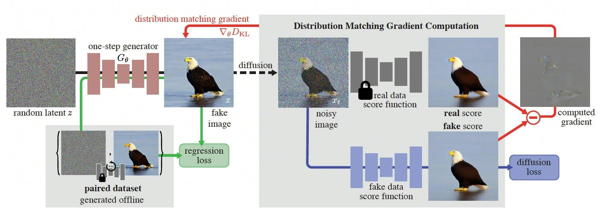
- Minimize \(\mathcal{L}_{\mathrm{KL}}=D_{\mathrm{KL}} (p_{\text{fake}} \parallel p_{\text{real}}) = \mathop{\mathbb{E}}_{x \sim p_{\text{fake}}} \left( \log \left( \frac{p_{\text{fake}}(x)}{p_{\text{real}}(x)} \right) \right) \nonumber= \mathop{\mathbb{E}}_{\substack{z \sim \mathcal{N}(0;\mathbf{I}) \\ x=G_\theta(z)}} - ( \log p_{\text{real}}(x) - \log p_{\text{fake}}(x) )\).
- Gradient: \(\nabla_\theta \mathcal{L}_{\mathrm{KL}} = \mathop{\mathbb{E}}_{\substack{z \sim \mathcal{N}(0;\mathbf{I}) \\ x=G_\theta(z)}} \left[ - (s_{\text{real}}(x) - s_{\text{fake}}(x)) \frac{dG}{d\theta} \right]\).
- Regression loss on static teacher's output: \(\mathcal{L}_{\mathrm{reg}}=\mathbb{E}_{(z,y)\sim\mathcal{D}}\ell^{\mathrm{LPIPS}}(G_{\theta}(z),y)\).
- Loss to update generator \(G_{\theta}\): \(\mathcal{L}_{\mathrm{KL}} + \lambda_{\mathrm{reg}}\mathcal{L}_{\mathrm{reg}}\).
- Loss to update fake denoiser \(\mu_{\text{fake}}^{\phi}\): \(||\mu_{\text{fake}}^{\phi}(x_t, t) - x_0||_2^2\).
Adversarial Diffusion Distillation
Axel Sauer, Dominik Lorenz, Andreas Blattmann, Robin Rombach
Stability AI
European Conference on Computer Vision (ECCV), 2024
It combines a score distillation objective and an adversarial loss.
- Adversarial loss: real image vs. denoised output of the student (with the noised clean image as the input).
- Distillation loss: student output vs. teacher output (with the noised student output as the input).
- NOTE: the distillation is seemed not necessary according to Table 1 (d).
Improved Techniques for Training Consistency Models
Yang Song, Prafulla Dhariwal
OpenAI
arXiv, 2023
Oct 22, 2023 | Improved Consistency Models
It improves consistency training by eliminating the need for distillation and learned metrics like LPIPS.
Latent Consistency Models: Synthesizing High-Resolution Images with Few-Step Inference
Simian Luo, Yiqin Tan, Longbo Huang, Jian Li, Hang Zhao
Tsinghua University
arXiv, 2023
It train consistency models in latent space with some improving tricks.
On Distillation of Guided Diffusion Models
Chenlin Meng, Robin Rombach, Ruiqi Gao, Diederik P. Kingma, Stefano Ermon, Jonathan Ho, Tim Salimans
Stanford University, Stability AI & LMU Munich, Google Research, Brain Team
Conference on Computer Vision and Pattern Recognition (CVPR), 2023
Oct 06, 2022 | CFG Distill
It first matches the combined conditional and unconditional outputs into a single model, and then progressively distills it for as few as 1 to 4 steps.
- Stage 1. Align the CFG output of the teacher model and the output of a student model with a CFG input.
- Stage 2. Step distillation.
- After distillation. Introduce stochastic sampling to improve generation quality, forward two ODE steps and backward one SDE step.
Consistency Models
Yang Song, Prafulla Dhariwal, Mark Chen, Ilya Sutskever
OpenAI
International Conference on Machine Learning (ICML), 2023
Mar 02, 2022 | Consistency Models
It maps any point on a probability flow ODE trajectory directly to its data origin, enabling single-step image generation.
- Consistency training: (1) sample a data point \(x_0\); (2) add noise to \(x_t\) and \(x_{t+1}\); (3) minimize the clean sample prediction from the student \(f(x_{t+1}, t+1)\) and its EMA model \(f^{-}(x_t,t)\).
- Consistency distillation: (1) sample a data point \(x_0\); (2) add noise to \(x_{t+1}\) and denoise one step by the teacher to \(\hat{x}_t\); (3) minimize the clean sample prediction from the student \(f(x_{t+1}, t+1)\) and its EMA model \(f^{-}(\hat{x}_t,t)\).
Progressive Distillation for Fast Sampling of Diffusion Models
Tim Salimans, Jonathan Ho
Google Research, Brain team
International Conference on Learning Representations (ICLR), 2022
Feb 01, 2022 | Progressive Distillation
It halves the sampling steps of diffusion models by distilling a deterministic DDIM teacher into a student with fewer steps.
Knowledge Distillation in Iterative Generative Models for Improved Sampling Speed
Eric Luhman, Troy Luhman
OpenAI
arXiv, 2021
Jan 07, 2021 | Denoising Student | code
It uses knowledge distillation to compress a DDIM from multi-step into single-step.
Generation: Datasets & Evaluation
HPSv3: Towards Wide-Spectrum Human Preference Score
Yuhang Ma, Yunhao Shui, Xiaoshi Wu, Keqiang Sun, Hongsheng Li
International Conference on Computer Vision (ICCV), 2025
It introduces a human-preference dataset with 1.08M text-image pairs and 1.17M pairwise comparisons, which are used to fine-tune Qwen2VL-7B.
Unified Reward Model for Multimodal Understanding and Generation
Yibin Wang, Yuhang Zang, Hao Li, Cheng Jin, Jiaqi Wang
Fudan University, Shanghai Innovation Institute, Shanghai AI Lab, Shanghai Academy of Artificial Intelligence for Science
arXiv, 2025
Mar 07, 2025 | UnifiedReward | code
It fine-tunes LLaVA-OneVision 7B for both multimodal understanding & generation evaluation by pairwise ranking & pointwise scoring.
VisionReward: Fine-Grained Multi-Dimensional Human Preference Learning for Image and Video Generation
Jiazheng Xu, Yu Huang, Jiale Cheng, Yuanming Yang, Jiajun Xu, Yuan Wang, Wenbo Duan, Shen Yang, Qunlin Jin, Shurun Li, Jiayan Teng, Zhuoyi Yang, Wendi Zheng, Xiao Liu, Ming Ding, Xiaohan Zhang, Xiaotao Gu, Shiyu Huang, Minlie Huang, Jie Tang, Yuxiao Dong
AAAI Conference on Artificial Intelligence (AAAI), 2026
Dec 30, 2024 | VisionReward | code
It disentangles human preference into 64 binary questions and learns an interpretable linear reward via multi-dimensional optimization.
T2V-CompBench: A Comprehensive Benchmark for Compositional Text-to-video Generation
Kaiyue Sun, Kaiyi Huang, Xian Liu, Yue Wu, Zihan Xu, Zhenguo Li, Xihui Liu
The University of Hong Kong, The Chinese University of Hong Kong, Huawei Noah's Ark Lab
T2V-CompBench
Jul 19, 2024 | T2V-CompBench | code
Evaluate compositional video generation capability: consistent attribute, dynamic attribute, spatial relationships, motion, action, object interactions, numeracy.
- Find nouns and verbs by identifying them using WordNet from Pika Discord channels, used to generate prompts by GPT-4.
- Consistent attribute binding: two objects, two attributes, and at least one active verb from color, shape, texture, and human-related attributes.
- Dynamic attribute binding: color and light change, shape and size change, texture change, combined change.
- Spatial relationships: two objects with spatial relationships like "on the left of".
- Motion binding: one or two objects with specified moving direction like "leftwards".
- Action binding: bind actions to corresponding objects.
- Object interactions: dynamic interactions like pysical interactions.
- Generative numeracy: a specific number of objects.
- Video LLM-based metrics (Grid-LLaVa) is used for evaluating consistent attribute binding, action binding, object interactions.
- Image LLM-based metrics (LLaVa) is used for evaluating dynamic attribute binding.
- Grounding DINO is used for evaluating spatial relationships and numeracy.
- Grounding SAM + DOT is used for evaluating motion binding.

Evaluating Text-to-Visual Generation with Image-to-Text Generation
Zhiqiu Lin, Deepak Pathak, Baiqi Li, Jiayao Li, Xide Xia, Graham Neubig, Pengchuan Zhang, Deva Ramanan
Crnegie Mellon University, Meta
European Conference on Computer Vision (ECCV), 2024
Apr 01, 2024 | VQAScore | code
VQAScore: alignment probability of "yes" answer from a VQA model (CLIP-FlanT5); GenAI-Bench: 1600 prompts for image generation evaluation.
VBench: Comprehensive Benchmark Suite for Video Generative Models
Ziqi Huang, Yinan He, Jiashuo Yu, Fan Zhang, Chenyang Si, Yuming Jiang, Yuanhan Zhang, Tianxing Wu, Qingyang Jin, Nattapol Chanpaisit, Yaohui Wang, Xinyuan Chen, Limin Wang, Dahua Lin, Yu Qiao, Ziwei Liu
Nanyang Technological University, Shanghai Artificial Intelligence Laboratory, The Chinese University of Hong Kong, Nanjing University
Conference on Computer Vision and Pattern Recognition (CVPR), 2024
It evaluates video generation from 16 dimensions within the perspectives of video quality and video-prompt consistency.
- Content Categories: animal, architecture, food, human, lifestyle, plant, scenary, vehicles.
- Temporal quality-subject consistency: DINO feature similarity across frames.
- Temporal quality-background consistency: CLIP feature similarity across frames.
- Temporal quality-temporal flickering: mean absolute difference across frames.
- Temporal quality-motion smoothness: use video frame interpolation model to evaluate motion smoothness.
- Temporal quality-dynamic degree: use RAFT to estimate degree of dynamics.
- Frame-wise quality-aesthetic quality: use LAION aesthetic predictor.
- Frame-wise quality-imaging quality: use MUSIQ image quality predictor.
- Semantics-object class: use GRiT to detect classes.
- Semantics-multiple objects: detect success rate of generating all objects.
- Semantics-human action: use UMT to detect specific actions.
- Semantics-color: use GRiT for color captioning.
- Semantics-spatial relationship: use rule-based evaluation.
- Semantics-scene: use Tag2Text for scene captioning.
- Style-appearance style: use CLIP feature similarity.
- Style-temporal style: use ViCLIP to calculate video feature and temporal style description feature similarity.
- Overall consistency: use ViCLIP to evaluate overall semantics and style consistency.
GenEval: An Object-Focused Framework for Evaluating Text-to-Image Alignment
Dhruba Ghosh, Hanna Hajishirzi, Ludwig Schmidt
University of Washington, Allen Institute for AI, LAION
Advances in Neural Information Processing Systems (NeurIPS), 2023
An object-focused framework for image generation evaluation.
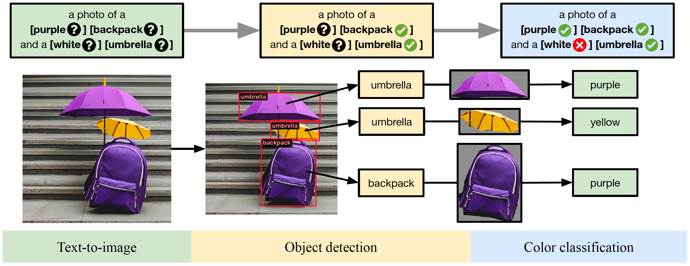
T2I-CompBench: A Comprehensive Benchmark for Open-world Compositional Text-to-image Generation
Kaiyi Huang, Kaiyue Sun, Enze Xie, Zhenguo Li, Xihui Liu
The University of Hong Kong, Huawei Noah's Ark Lab
Advances in Neural Information Processing Systems (NeurIPS), 2023
Jul 12, 2023 | T2I-CompBench | code
It uses 6000 prompts to evaluate model capability on compositional generation, including attribute binding, object relationship, complex compositions.
- Attribute binding prompts: at least two objects with two attributes from color, shape, texture.
- Object relationship prompts: at least two objects with spatial relationship or non-spatial relationship.
- Complex compositions prompts: more than two objects or more than two sub-categories.
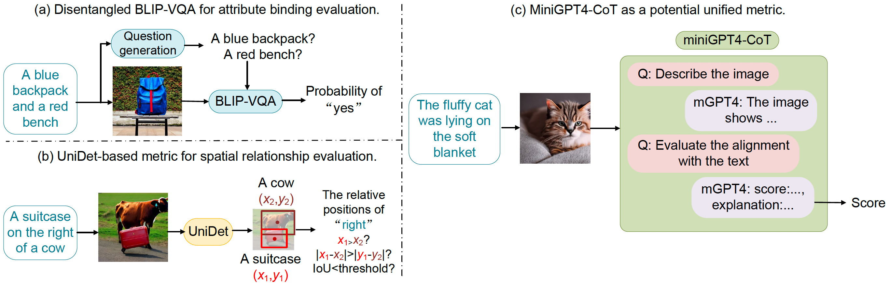
Human Preference Score v2: A Solid Benchmark for Evaluating Human Preferences of Text-to-Image Synthesis
Xiaoshi Wu, Yiming Hao, Keqiang Sun, Yixiong Chen, Feng Zhu, Rui Zhao, Hongsheng Li
CUHK, SenseTime Research, Shanghai Jiao Tong University, Centre for Perceptual and Interactive Intelligence
arXiv, 2023
It proposes HPD v2: 798K human preferences on 433K pairs of images; HPS v2: fine-tuned CLIP on HPD v2 for image generation evaluation.

Pick-a-Pic: An Open Dataset of User Preferences for Text-to-Image Generation
Yuval Kirstain, Adam Polyak, Uriel Singer, Shahbuland Matiana, Joe Penna, Omer Levy
Tel Aviv University, Stability AI
Advances in Neural Information Processing Systems (NeurIPS), 2023
May 02, 2023 | PickScore | code
Pick-a-Pic: use a web app to collect user preferences; PickScore: train a CLIP-based model on preference data for image generation evaluation.
ImageReward: Learning and Evaluating Human Preferences for Text-to-Image Generation
Jiazheng Xu, Xiao Liu, Yuchen Wu, Yuxuan Tong, Qinkai Li, Ming Ding, Jie Tang, Yuxiao Dong
Tsinghua University, Zhipu AI, Beijing University of Posts and Telecommunications
Advances in Neural Information Processing Systems (NeurIPS), 2023
Apr 12, 2023 | ImageReward | code
It trains BLIP on 137K human preference image pairs for preference evaluation and use it to tune models by Reward Feedback Learning (ReFL).
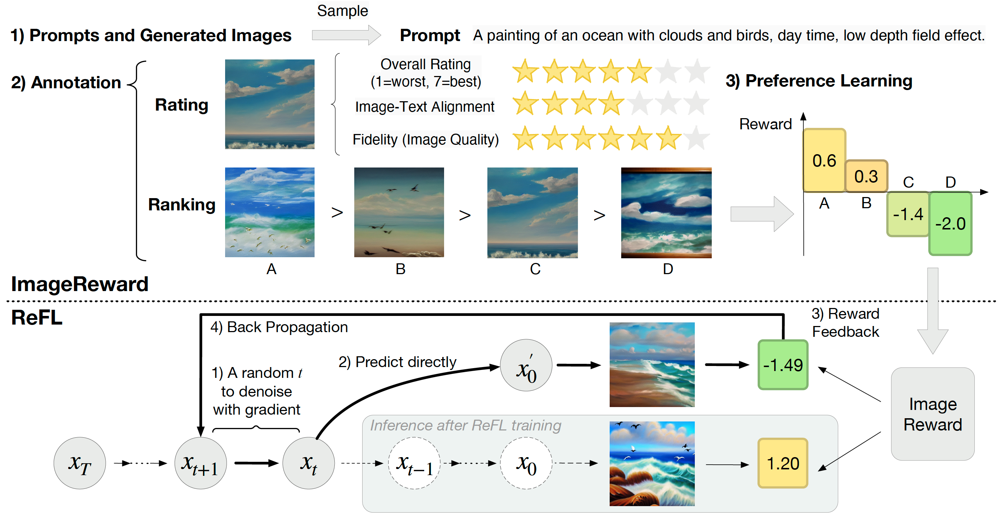
Human Preference Score: Better Aligning Text-to-Image Models with Human Preference
Xiaoshi Wu, Keqiang Sun, Feng Zhu, Rui Zhao, Hongsheng Li
CUHK, SenseTime Research, Shanghai Jiao Tong University, Centre for Perceptual and Interactive Intelligence, Shanghai AI Lab
International Conference on Computer Vision (ICCV), 2023
It fine-tunes CLIP on annotated 98K SD generated images from 25K prompts for image generation evaluation.
CLIPScore: A Reference-free Evaluation Metric for Image Captioning
Jack Hessel, Ari Holtzman, Maxwell Forbes, Ronan Le Bras, Yejin Choi
Allen Institute for AI, University of Washington
Conference on Empirical Methods in Natural Language Processing (EMNLP), 2021
Apr 18, 2021 | CLIPScore | code
It proposes a reference-free metric mainly focusing on semantic alignment for image generation evaluation.
- It calculates the cosine similarity between a caption and an image, multiplying the result by 2.5 (some use 1.).
- It is sensitive to adversarially constructed image captions.
- It generalizes well on never-before-seen images.
- It frees from the shortcomings of n-gram matching that disfavors good captions with new words and favors captions with familiar words.
FVD: A new Metric for Video Generation
Thomas Unterthiner, Sjoerd van Steenkiste, Karol Kurach, Raphaël Marinier, Marcin Michalski, Sylvain Gelly
Johannes Kepler University, IDSIA, Google Brain
International Conference on Learning Representations (ICLR workshop), 2019
May 04, 2019 | FVD
Extend FID for video generation evaluation by replacing 2D InceptionNet with pre-trained Inflated 3D convnet.
GANs Trained by a Two Time-Scale Update Rule Converge to a Local Nash Equilibrium
Martin Heusel, Hubert Ramsauer, Thomas Unterthiner, Bernhard Nessler, Sepp Hochreiter
Johannes Kepler University Linz
Advances in Neural Information Processing Systems (NeurIPS), 2017
Jun 26, 2017 | FID
Calculate Fréchet distance between Gaussian distributions of InceptionNet features of real-world and synthetic data for image generation evaluation.
Improved Techniques for Training GANs
Tim Salimans, Ian Goodfellow, Wojciech Zaremba, Vicki Cheung, Alec Radford, Xi Chen
OpenAI
Advances in Neural Information Processing Systems (NeurIPS), 2016
Jun 10, 2016 | Inception Score | code
Calculate KL divergence between p(y|x) and p(y) that aims to minimize the entropy across predictions and maximize the entropy across predictions of classes for image generation evaluation.
Generation: Controllability
Follow-Your-Emoji: Fine-Controllable and Expressive Freestyle Portrait Animation
Yue Ma, Hongyu Liu, Hongfa Wang, Heng Pan, Yingqing He, Junkun Yuan, Ailing Zeng, Chengfei Cai, Heung-Yeung Shum, Wei Liu, Qifeng Chen
ACM SIGGRAPH Annual Conference in Asia (SIGGRAPH-Asia), 2024
Jun 04, 2024 | Follow-Your-Emoji | code
Adding Conditional Control to Text-to-Image Diffusion Models
Lvmin Zhang, Anyi Rao, Maneesh Agrawala
Stanford University
International Conference on Computer Vision (ICCV), 2023
Feb 10, 2023 | ControlNet
It introduces a scalable method to condition diffusion models with additional spatial or semantic inputs, enabling precise and flexible control over image generation without retraining the base model. It has over 5,000 citations (as of Sep 2025).
It introduces a zero-convolution bypass architecture that adds spatial conditioning to frozen diffusion models for Generation: Controllability.
Generation: Editing & Inpainting & Outpainting
Trans-Adapter: A Plug-and-Play Framework for Transparent Image Inpainting
Yuekun Dai, Haitian Li, Shangchen Zhou, Chen Change Loy
Nanyang Technological University
International Conference on Computer Vision (ICCV), 2025
Aug 01, 2025 | Trans-Adapter | code
It proposes a plug-and-play adapter that inflates any diffusion inpainting model to generate aligned RGB and alpha channels for transparent images.
MTADiffusion: Mask Text Alignment Diffusion Model for Object Inpainting
Jun Huang, Ting Liu, Yihang Wu, Xiaochao Qu, Luoqi Liu, Xiaolin Hu
Meitu, National University of Singapore, Tsinghua University
Conference on Computer Vision and Pattern Recognition (CVPR), 2025
Jun 30, 2025 | MTADiffusion
It leverages 25 million fine-grained mask-text pairs and multi-task edge-guided training with Gram-style loss to learn image inpainting.
Keyframe-Guided Creative Video Inpainting
Yuwei Guo, Ceyuan Yang, Anyi Rao, Chenlin Meng, Omer Bar-Tal, Shuangrui Ding, Maneesh Agrawala, Dahua Lin, Bo Dai
CUHK, Shanghai AI Laboratory, Pika Labs, ByteDance, CPII under InnoHK, Stanford, HKUST, HKU, Feeling AI
Conference on Computer Vision and Pattern Recognition (CVPR), 2025
Jun 11, 2025 | VideoRepainter
It introduces a keyframe-guided two-stage pipeline that repurposes an image-to-video model with mask conditioning for creative video inpainting.
HomoGen: Enhanced Video Inpainting via Homography Propagation and Diffusion
Ding Ding, Yueming Pan, Ruoyu Feng, Qi Dai, Kai Qiu, Jianmin Bao, Chong Luo, Zhenzhong Chen
Wuhan University, Xi'an Jiaotong University, University of Science and Technology of China, Microsoft Research Asia
Conference on Computer Vision and Pattern Recognition (CVPR), 2025
Jun 11, 2025 | HomoGen
It employs homography-based pixel propagation to supply semantically coherent priors and a content-adaptive model for video inpainting.
Step1X-Edit: A Practical Framework for General Image Editing
Step1X-Image Team
StepFun
arXiv, 2025
Apr 24, 2025 | Step1X-Edit | code
It uses a MLLM to generate condition embedding of the reference image and instructions for image generation editing.
- Training date: 1M images & 20M instruction-image data.
- Data construction. (1) Subject addition and removal; (2) Subject replacement and background change; (3) Color Alteration and material modification; (4) Text modification; (5) Motion change; (6) Portrait editing; (7) Style transfer; (8) Tone transformation.
- Caption strategy. Redundancy-enhanced annotation: multi-round annotation strategy. Stylized annotation via contextual examples: use style-aligned examples as contextual references. Use GPT-4o to annotate data for training in-house annotators. Bilingual: Chinese and English.
ATA: Adaptive Transformation Agent for Text-Guided Subject-Position Variable Background Inpainting
Yizhe Tang, Zhimin Sun, Yuzhen Du, Ran Yi, Guangben Lu, Teng Hu, Luying Li, Lizhuang Ma, Fangyuan Zou
Shanghai Jiao Tong University, Tencent
Conference on Computer Vision and Pattern Recognition (CVPR), 2025
Apr 02, 2025 | ATA
It predicts subject displacement via hierarchical reverse transforms to enable text-guided, position-variable background inpainting.
TurboFill: Adapting Few-step Text-to-image Model for Fast Image Inpainting
Liangbin Xie, Daniil Pakhomov, Zhonghao Wang, Zongze Wu, Ziyan Chen, Yuqian Zhou, Haitian Zheng, Zhifei Zhang, Zhe Lin, Jiantao Zhou, Chao Dong
University of Macau, Shenzhen University of Advanced Technology, Adobe, Chinese Academy of Sciences
Conference on Computer Vision and Pattern Recognition (CVPR), 2025
Apr 01, 2025 | TurboFill
It trains a ControlNet-style adapter directly on a distilled text-to-image model via a novel 3-step adversarial training scheme.
OmniPaint: Mastering Object-Oriented Editing via Disentangled Insertion-Removal Inpainting
Yongsheng Yu, Ziyun Zeng, Haitian Zheng, Jiebo Luo
University of Rochester, Adobe Research
International Conference on Computer Vision (ICCV), 2025
Mar 11, 2025 | OmniPaint
It proposes a unified framework that reconceptualizes object removal and insertion as interdependent inverse tasks.
SAGI: Semantically Aligned and Uncertainty Guided AI Image Inpainting
Paschalis Giakoumoglou, Dimitrios Karageorgiou, Symeon Papadopoulos, Panagiotis C. Petrantonakis
Aristotle University of Thessaloniki, CERTH
International Conference on Computer Vision (ICCV), 2025
It proposes a pipeline to combine semantically-aligned prompt generation and uncertainty-guided realism filtering for image inpainting.
BVINet: Unlocking Blind Video Inpainting with Zero Annotations
Zhiliang Wu, Kerui Chen, Kun Li, Hehe Fan, Yi Yang
Zhejiang University
International Conference on Computer Vision (ICCV), 2025
Feb 03, 2025 | BVINet
It proposes the first end-to-end blind video inpainting framework that jointly learns mask prediction and inpainting without any manual annotations.
RAD: Region-Aware Diffusion Models for Image Inpainting
Sora Kim, Sungho Suh, Minsik Lee
Hanyang University, Korea University, DFKI, Hanyang University ERICA
Conference on Computer Vision and Pattern Recognition (CVPR), 2025
Dec 12, 2024 | RAD
It proposes a pixel-wise spatially-varying diffusion schedule that asynchronously denoises masked regions.
Pinco: Position-induced Consistent Adapter for Diffusion Transformer in Foreground-conditioned Inpainting
Guangben Lu, Yuzhen Du, Zhimin Sun, Ran Yi, Yifan Qi, Yizhe Tang, Tianyi Wang, Lizhuang Ma, Fangyuan Zou
Shanghai Jiao Tong University, Tencent
International Conference on Computer Vision (ICCV), 2025
Dec 05, 2024 | Pinco
It proposes a foreground-conditioned inpainting adapter that injects subject-aware attention into the self-attention layer.
OmniEdit: Building Image Editing Generalist Models Through Specialist Supervision
Cong Wei, Zheyang Xiong, Weiming Ren, Xinrun Du, Ge Zhang, Wenhu Chen
University of Waterloo, University of Wisconsin-Madison, Vector Institute, M-A-P
International Conference on Learning Representations (ICLR), 2025
Nov 11, 2024 | OmniEdit | code
It introduces a diffusion editor that employs seven task-specific experts, GPT-4o-driven importance sampling and an EditNet transformer.
PrefPaint: Aligning Image Inpainting Diffusion Model with Human Preference
Kendong Liu, Zhiyu Zhu, Chuanhao Li, Hui Liu, Huanqiang Zeng, Junhui Hou
City University of Hong Kong, Yale University, Saint Francis University, Huaqiao University
Advances in Neural Information Processing Systems (NeurIPS), 2024
Oct 29, 2024 | PrefPaint | code
It trains a reward model on 51K images with human preferences, and uses it to perform reinforcement learning of diffusion models.
TD-Paint: Faster Diffusion Inpainting Through Time Aware Pixel Conditioning
Tsiry Mayet, Pourya Shamsolmoali, Simon Bernard, Eric Granger, Romain Hérault, Clement Chatelain
INSA Rouen Normandie, University of York, Universit'e Rouen Normandie, LIVIA, Universit'e Caen Normandie,
International Conference on Learning Representations (ICLR), 2025
Oct 11, 2024 | TD-Paint | code
It introduces a pixel-wise time-conditioning scheme that allows cutting sampling steps by an order of magnitude without architectural changes.
Improving Text-guided Object Inpainting with Semantic Pre-inpainting
Yifu Chen, Jingwen Chen, Yingwei Pan, Yehao Li, Ting Yao, Zhineng Chen, Tao Mei
Fudan University, Shanghai Collaborative Innovation Center of Intelligent Visual Computing, HiDream.ai Inc.
European Conference on Computer Vision (ECCV), 2024
Sep 12, 2024 | CAT-Diffusion | code
It presents a cascaded Transformer-diffusion that semantically pre-inpaints object features in CLIP space and injects them via a reference adapter.
Follow-Your-Canvas: Higher-Resolution Video Outpainting with Extensive Content Generation
Qihua Chen, Yue Ma, Hongfa Wang, Junkun Yuan, Wenzhe Zhao, Qi Tian, Hongmei Wang, Shaobo Min, Qifeng Chen, Wei Liu
Tencent, HKUST, USTC, Tsinghua University
AAAI Conference on Artificial Intelligence (AAAI), 2025
Sep 02, 2024 | Follow-Your-Canvas | code
It enables higher-resolution video outpainting with extensive content generation through sliding window and source video layout injection.
Brush2Prompt: Contextual Prompt Generator for Object Inpainting
Mang Tik Chiu, Yuqian Zhou, Lingzhi Zhang, Zhe Lin, Connelly Barnes, Sohrab Amirghodsi, Eli Shechtman, Humphrey Shi
UIUC, Adobe, University of Oregon
Conference on Computer Vision and Pattern Recognition (CVPR), 2024
Jun 17, 2024 | Brush2Prompt
It proposes a prompt generator that translates masked-image CLIP embeddings into diverse object labels or captions without user text input.
Paint by Inpaint: Learning to Add Image Objects by Removing Them First
Navve Wasserman, Noam Rotstein, Roy Ganz, Ron Kimmel
Weizmann Institute of Science, Technion - Israel Institute of Technology
Conference on Computer Vision and Pattern Recognition (CVPR), 2025
Apr 28, 2024 | Paint by Inpaint | code
It inverts large-scale inpainting pipelines to synthesize real object-addition pairs, setting new SOTA for text-guided object insertion & general editing.
Structure Matters: Tackling the Semantic Discrepancy in Diffusion Models for Image Inpainting
Haipeng Liu, Yang Wang, Biao Qian, Meng Wang, Yong Rui
Hefei University of Technology, Lenovo Research
Conference on Computer Vision and Pattern Recognition (CVPR), 2024
Mar 29, 2024 | StrDiffusion | code
It progressively injects sparser structural semantics to bridge the semantic gap between masked and unmasked regions.
Don't Look into the Dark: Latent Codes for Pluralistic Image Inpainting
Haiwei Chen, Yajie Zhao
University of Southern California, USC Institute for Creative Technologies
Conference on Computer Vision and Pattern Recognition (CVPR), 2024
Mar 27, 2024 | Latent Codes | code
It encodes visible regions, infers missing tokens, and fuses them with partial-image priors to achieve inpainting under extreme masks.
BrushNet: A Plug-and-Play Image Inpainting Model with Decomposed Dual-Branch Diffusion
Xuan Ju, Xian Liu, Xintao Wang, Yuxuan Bian, Ying Shan, Qiang Xu
Tencent PCG ARC Lab, The Chinese University of Hong Kong
European Conference on Computer Vision (ECCV), 2024
Mar 11, 2024 | BrushNet | code
It introduces a plug-and-play dual-branch model and a segmentation-based inpainting training dataset BrushData and a benchmark BrushBench.
Towards Language-Driven Video Inpainting via Multimodal Large Language Models
Jianzong Wu, Xiangtai Li, Chenyang Si, Shangchen Zhou, Jingkang Yang, Jiangning Zhang, Yining Li, Kai Chen, Yunhai Tong, Ziwei Liu, Chen Change Loy
Peking University, Nanyang Technological University, Shanghai AI Laboratory, PKU-Wuhan Institute for Artificial Intelligence, Zhejiang University
Conference on Computer Vision and Pattern Recognition (CVPR), 2024
It introduces language-driven video inpainting, a new task that replaces binary masks with natural language instructions.
HD-Painter: High-Resolution and Prompt-Faithful Text-Guided Image Inpainting with Diffusion Models
Hayk Manukyan, Andranik Sargsyan, Barsegh Atanyan, Zhangyang Wang, Shant Navasardyan, Humphrey Shi
Picsart AI Research (PAIR), UT Austin, Georgia Tech
International Conference on Learning Representations (ICLR), 2025
Dec 21, 2023 | HD-Painter | code
It introduces plug-and-play PAIntA and RASG to make text-guided inpainting prompt-faithful, high-resolution, and training-free.
Towards Enhanced Image Inpainting: Mitigating Unwanted Object Insertion and Preserving Color Consistency
Yikai Wang, Chenjie Cao, Junqiu Yu, Ke Fan, Xiangyang Xue, Yanwei Fu
Fudan University, Nanyang Technological University, Alibaba DAMO Academy, Hupan Lab
Conference on Computer Vision and Pattern Recognition (CVPR), 2025
It proposes to align MAE prior and fine-tune a local-harmonization VAE decoder to suppress object hallucination & color inconsistency in inpainting.
A Task is Worth One Word: Learning with Task Prompts for High-Quality Versatile Image Inpainting
Junhao Zhuang, Yanhong Zeng, Wenran Liu, Chun Yuan, Kai Chen
Tsinghua University, Shanghai Artificial Intelligence Laboratory
European Conference on Computer Vision (ECCV), 2024
Dec 06, 2023 | PowerPaint | code
It presents unifies multiple tasks through learnable task prompts, achieving SOTA results in object synthesis, removal, and outpainting.
AVID: Any-Length Video Inpainting with Diffusion Model
Zhixing Zhang, Bichen Wu, Xiaoyan Wang, Yaqiao Luo, Luxin Zhang, Yinan Zhao, Peter Vajda, Dimitris Metaxas, Licheng Yu
Rutgers University, Meta
Conference on Computer Vision and Pattern Recognition (CVPR), 2024
It combines motion modules, adjustable structure guidance, and MultiDiffusion sampler with middle-frame attention to inpaint videos of any length.
Image Inpainting via Tractable Steering of Diffusion Models
Anji Liu, Mathias Niepert, Guy Van den Broeck
University of California, Los Angeles, University of Stuttgart
International Conference on Learning Representations (ICLR), 2024
It introduces the first framework that steers diffusion models via exact yet efficient probalistic circuits-computed conditional distributions.
SmartBrush: Text and Shape Guided Object Inpainting with Diffusion Model
Shaoan Xie, Zhifei Zhang, Zhe Lin, Tobias Hinz, Kun Zhang
Carnegie Mellon University
Conference on Computer Vision and Pattern Recognition (CVPR), 2023
Dec 09, 2022 | SmartBrush
It jointly leverages text prompts and multi-precision object masks, together with a self-predicted foreground mask, to achieve high-fidelity inpainting.
Image Inpainting via Iteratively Decoupled Probabilistic Modeling
Wenbo Li, Xin Yu, Kun Zhou, Yibing Song, Zhe Lin, Jiaya Jia
Huawei Noah's Ark Lab, HKU, CUHK (SZ), Alibaba DAMO Academy, Adobe Research
International Conference on Learning Representations (ICLR), 2024
It alternates between adversarially-optimized mean prediction and Gaussian-modeled uncertainty, achieving efficient large-hole inpainting.
Generation: Stylization
OmniStyle2: Scalable and High Quality Artistic Style Transfer Data Generation via Destylization
Ye Wang, Zili Yi, Yibo Zhang, Peng Zheng, Xuping Xie, Jiang Lin, Yilin Wang, Rui Ma
Jilin University, Nanjing University, Shanghai Innovation Institute, Adobe, Engineering Research Center of Knowledge-Driven Human-Machine Intelligence
arXiv, 2025
Sep 07, 2025 | OmniStyle2
It introduces destylization to reverse style transfer and creates the 100K-pair DST-100K dataset, enabling a simple FLUX-based model.
SCFlow: Implicitly Learning Style and Content Disentanglement with Flow Models
Pingchuan Ma, Xiaopei Yang, Yusong Li, Ming Gui, Felix Krause, Johannes Schusterbauer, Björn Ommer
LMU Munich, Munich Center for Machine Learning
International Conference on Computer Vision (ICCV), 2025
Aug 05, 2025 | SCFlow
It implicitly disentangles style and content by learning an invertible flow between entangled and disentangled latent distributions.
AIComposer: Any Style and Content Image Composition via Feature Integration
Haowen Li, Zhenfeng Fan, Zhang Wen, Zhengzhou Zhu, Yunjin Li
Peking University, Beijing Yuanli Science and Technology
International Conference on Computer Vision (ICCV), 2025
Jul 28, 2025 | AIComposer | code
It achieves text-prompt-free stylization by linearly separating and re-fusing content/style CLIP features, guiding a single-branch 10-step diffusion.
CSD-VAR: Content-Style Decomposition in Visual Autoregressive Models
Quang-Binh Nguyen, Minh Luu, Quang Nguyen, Anh Tran, Khoi Nguyen
Qualcomm AI Research, MovianAI
International Conference on Computer Vision (ICCV), 2025
Jul 18, 2025 | CSD-VAR
It pioneers VAR-based content-style decomposition by scale-aware alternating optimization, SVD rectification, and augmented K-V memories.
Domain Generalizable Portrait Style Transfer
Xinbo Wang, Wenju Xu, Qing Zhang, Wei-Shi Zheng
Sun Yat-sen University, AMAZON, Key Laboratory of Machine Intelligence and Advanced Computing
International Conference on Computer Vision (ICCV), 2025
It unifies dense semantic correspondence, AdaIN-Wavelet latent fusion, and dual-conditional diffusion to enable portrait style transfer.
OmniStyle: Filtering High Quality Style Transfer Data at Scale
Ye Wang, Ruiqi Liu, Jiang Lin, Fei Liu, Zili Yi, Yilin Wang, Rui Ma
Jilin University, Nanjing University, ByteDance, Adobe, Engineering Research Center of Knowledge-Driven Human-Machine Intelligence, MOE, China
Conference on Computer Vision and Pattern Recognition (CVPR), 2025
May 20, 2025 | OmniStyle | code
It introduces a dataset consisting of 150K content-style-stylized image triplets across 1,000 styles with textual discriptions and instruction prompts.
DuoLoRA : Cycle-consistent and Rank-disentangled Content-Style Personalization
Aniket Roy, Shubhankar Borse, Shreya Kadambi, Debasmit Das, Shweta Mahajan, Risheek Garrepalli, Hyojin Park, Ankita Nayak, Rama Chellappa, Munawar Hayat, Fatih Porikli
Johns Hopkins University, Qualcomm AI Research
International Conference on Computer Vision (ICCV), 2025
Apr 15, 2025 | DuoLoRA
It disentangles content and style in diffusion LoRA merging by rank-dimension masking, layer priors, and cycle-consistency loss.
Semantix: An Energy Guided Sampler for Semantic Style Transfer
Huiang He, Minghui Hu, Chuanxia Zheng, Chaoyue Wang, Tat-Jen Cham
South China University of Technology, Nanyang Technological University, University of Oxford, The University of Sydney,
International Conference on Learning Representations (ICLR), 2025
Mar 28, 2025 | Semantix
It is a training-free, energy-guided sampler that performs semantic style and appearance transfer for both images and videos.
SaMam: Style-aware State Space Model for Arbitrary Image Style Transfer
Hongda Liu, Longguang Wang, Ye Zhang, Ziru Yu, Yulan Guo
Sun Yat-Sen University, Aviation University of Air Force
Conference on Computer Vision and Pattern Recognition (CVPR), 2025
Introduce Mamba model into style transfer to improve efficiency.
V-Stylist: Video Stylization via Collaboration and Reflection of MLLM Agents
Zhengrong Yue, Shaobin Zhuang, Kunchang Li, Yanbo Ding, Yali Wang
Shanghai Jiao Tong University, Shanghai AI Laboratory, Shenzhen Institutes of Advanced Technology, Chinese Academy of Sciences, University of Chinese Academy of Sciences
Conference on Computer Vision and Pattern Recognition (CVPR), 2025
Mar 15, 2025 | V-Stylist | code
It enables video stylization with open style prompt by searching a style tree and asigning the obtained weights to ControlNets.
- Video parser splits the input video into shots and generates their text prompts.
- Style parser search the matched style ControlNet model combination from a style tree.
- Style artist renders the video shots by applying the matched style ControlNet models.
Balanced Image Stylization with Style Matching Score
Yuxin Jiang, Liming Jiang, Shuai Yang, Jia-Wei Liu, Ivor Tsang, Mike Zheng Shou
National University of Singapore, Technology and Research (A*STAR), Nanyang Technological University, Peking University
International Conference on Computer Vision (ICCV), 2025
It reframes stylization as style-distribution matching with LoRA priors, regularizing in frequency domain and semantically refining gradients.
SCSA: A Plug-and-Play Semantic Continuous-Sparse Attention for Arbitrary Semantic Style Transfer
Chunnan Shang, Zhizhong Wang, Hongwei Wang, Xiangming Meng
Conference on Computer Vision and Pattern Recognition (CVPR), 2025
Mar 06, 2025 | SCSA
It augments attention-based training-free arbitrary style transfer with semantic-aware continuous sparse attention.
K-LoRA: Unlocking Training-Free Fusion of Any Subject and Style LoRAs
Ziheng Ouyang, Zhen Li, Qibin Hou
Nankai University
Conference on Computer Vision and Pattern Recognition (CVPR), 2025
It introduces training-free LoRA fusion that compares Top-K elements in LoRAs to be fused and determines which LoRA to select for optimal fusion.
Less is More: Masking Elements in Image Condition Features Avoids Content Leakages in Style Transfer Diffusion Models
Lin Zhu, Xinbing Wang, Chenghu Zhou, Qinying Gu, Nanyang Ye
Shanghai Jiao Tong University, Chinese Academy of Sciences, Shanghai Artificial Intelligence Laboratory
International Conference on Learning Representations (ICLR), 2025
It masks content-correlated entries in the style-reference feature to achieve training-free, leakage-free text-driven style transfer.
HSI: A Holistic Style Injector for Arbitrary Style Transfer
Shuhao Zhang, Hui Kang, Yang Liu, Fang Mei, Hongjuan Li
Jilin University, Jilin University of Arts
Conference on Computer Vision and Pattern Recognition (CVPR), 2025
Feb 05, 2025 | HSI
It replaces attention with element-wise global-statistic injection, achieving high-quality arbitrary style transfer.
StyleSSP: Sampling StartPoint Enhancement for Training-free Diffusion-based Method for Style Transfer
Ruojun Xu, Weijie Xi, Xiaodi Wang, Yongbo Mao, Zach Cheng
Zhejiang University, Dcar
Conference on Computer Vision and Pattern Recognition (CVPR), 2025
Jan 20, 2025 | StyleSSP | code
It employs DDIM reversion of content images with low frequency component removed to obtain a better initial noise for training-free style transfer.
IntroStyle: Training-Free Introspective Style Attribution using Diffusion Features
Anand Kumar, Jiteng Mu, Nuno Vasconcelos
University of California, San Diego
International Conference on Computer Vision (ICCV), 2025
Dec 19, 2024 | IntroStyle | code
It proposes a training-free style attribution framework that leverages only internal statistics of pre-trained diffusion features for style similarity retrieval.
StyleStudio: Text-Driven Style Transfer with Selective Control of Style Elements
Mingkun Lei, Xue Song, Beier Zhu, Hao Wang, Chi Zhang
Westlake University, Fudan University, Nanyang Technological University, The Hong Kong University of Science and Technology (Guangzhou)
Conference on Computer Vision and Pattern Recognition (CVPR), 2025
Dec 11, 2024 | StyleStudio | code
It improves text-driven style transfer by cross-modal AdaIN, teacher model guidance, and style CFG with negative style images.
StyleMaster: Stylize Your Video with Artistic Generation and Translation
Zixuan Ye, Huijuan Huang, Xintao Wang, Pengfei Wan, Di Zhang, Wenhan Luo
Hong Kong University of Science and Technology, KuaiShou Technology
Conference on Computer Vision and Pattern Recognition (CVPR), 2025
Dec 10, 2024 | StyleMaster | code
LoRA.rar: Learning to Merge LoRAs via Hypernetworks for Subject-Style Conditioned Image Generation
Donald Shenaj, Ondrej Bohdal, Mete Ozay, Pietro Zanuttigh, Umberto Michieli
Samsung R&D Institute UK, University of Padova
International Conference on Computer Vision (ICCV), 2025
Dec 06, 2024 | LoRA.rar | code
It trains a lightweight hypernetwork to predict adaptive merging coefficients for any unseen subject-style LoRA pair, achieving real-time generation.
UnZipLoRA: Separating Content and Style from a Single Image
Chang Liu, Viraj Shah, Aiyu Cui, Svetlana Lazebnik
University of Illinois, Urbana-Champaign
International Conference on Computer Vision (ICCV), 2025
Dec 05, 2024 | UnZipLoRA | code
It decomposes a single image into two orthogonal yet compatible content / style LoRAs via prompt-, column- and block-separation.
Content-Style Learning from Unaligned Domains: Identifiability under Unknown Latent Dimensions
Sagar Shrestha, Xiao Fu
Mohamed bin Zayed University of Artificial Intelligence, New York University Shanghai, Carnegie Mellon University
International Conference on Learning Representations (ICLR), 2025
It shows that content and style can be identified from unaligned multi-domain data without knowing their dimensions by distribution matching.
Towards Compact Reversible Image Representations for Neural Style Transfer
Xiyao Liu, Siyu Yang, Xunli Fan, Jian Zhang, Songtao Wu, Gerald Schaefer, Hui Fang
Central South University, Loughborough University, Hunan Embroidery Research Institute, Northwest University, Sony R&D Center China
European Conference on Computer Vision (ECCV), 2024
Sep 29, 2024 | CompRever
It enforces information-theoretic redundancy reduction within a reversible flow to achieve compact yet expressive representations.
ACFun: Abstract-Concrete Fusion Facial Stylization
Jiapeng Ji, Kun Wei, Ziqi Zhang, Cheng Deng
Xidian University
Advances in Neural Information Processing Systems (NeurIPS), 2024
Sep 26, 2024 | ACFun
It disentangles abstract and concrete style features via CLIP-guided fusion, achieving one-shot, high-fidelity, and controllable facial stylization.
FineStyle: Fine-grained Controllable Style Personalization for Text-to-image Models
Gong Zhang, Kihyuk Sohn, Meera Hahn, Humphrey Shi, Irfan Essa
Georgia Tech, Google DeepMind, Meta Reality Labs
Advances in Neural Information Processing Systems (NeurIPS), 2024
Sep 26, 2024 | FineStyle | code
It disentangles style from a reference via concept-oriented data scaling and KV-adapter tuning, enabling leakage-free, controllable stylization.
StyleTokenizer: Defining Image Style by a Single Instance for Controlling Diffusion Models
Wen Li, Muyuan Fang, Cheng Zou, Biao Gong, Ruobing Zheng, Meng Wang, Jingdong Chen, Ming Yang
Ant Group, Hangzhou, China
European Conference on Computer Vision (ECCV), 2024
Sep 04, 2024 | StyleTokenizer | code
It aligns a single-image style embedding with the textual embedding space via a style tokenizer, enabling zero-shot, disentangled style control.
Style-Editor: Text-driven Object-centric Style Editing
Jihun Park, Jongmin Gim, Kyoungmin Lee, Seunghun Lee, Sunghoon Im
Republic of Korea
Conference on Computer Vision and Pattern Recognition (CVPR), 2025
Aug 16, 2024 | Style-Editor
It achieves object-level text-driven style editing by identifying an object patches using CLIP and editing its style while preserving the background.
RB-Modulation: Training-Free Personalization of Diffusion Models using Stochastic Optimal Control
Litu Rout, Yujia Chen, Nataniel Ruiz, Abhishek Kumar, Constantine Caramanis, Sanjay Shakkottai, Wen-Sheng Chu
International Conference on Learning Representations (ICLR), 2025
May 27, 2024 | RB-Modulation | code
It introduces a stochastic optimal control for test-time, training-free personalization via style control and a cross-attention disentanglement module.
Implicit Style-Content Separation using B-LoRA
Yarden Frenkel, Yael Vinker, Ariel Shamir, Daniel Cohen-Or
Tel Aviv University, Reichman University
European Conference on Computer Vision (ECCV), 2024
It implicitly disentangles style and content from an image by training two LoRA adapters on specific SDXL blocks, enabling plug-and-play stylization.
ZipLoRA: Any Subject in Any Style by Effectively Merging LoRAs
Viraj Shah, Nataniel Ruiz, Forrester Cole, Erika Lu, Svetlana Lazebnik, Yuanzhen Li, Varun Jampani
Google Research, UIUC
European Conference on Computer Vision (ECCV), 2024
Nov 22, 2023 | ZipLoRA
It learns column-wise mixing coefficients to orthogonally merge content and style LoRAs.
InstaStyle: Inversion Noise of a Stylized Image is Secretly a Style Adviser
Xing Cui, Zekun Li, Pei Pei Li, Huaibo Huang, Xuannan Liu, Zhaofeng He
Beijing University of Posts and Telecommunications, University of California, Santa Barbara, Chinese Academy of Sciences
European Conference on Computer Vision (ECCV), 2024
Nov 05, 2023 | InstaStyle | code
It leverages the inversion noise of a stylized image and refines a learnable style token, enabling one-shot stylized generation.
Generation: Text Rendering and Editing
ViType: High-Fidelity Visual Text Rendering via Glyph-Aware Multimodal Diffusion
Lishuai Gao, Jun-Yan He, Yingsen Zeng, Yujie Zhong, Xiaopeng Sun, Jie Hu, XiaomingWei
Meituan
AAAI Conference on Artificial Intelligence (AAAI), 2026
Jan 20, 2026 | ViType
It trains a glyph-encoder to align glyph embeddings to text embeddings, and jointly finetunes both glyph encoder and MMDiT afterwards.
FonTS: Text Rendering with Typography and Style Controls
Wenda Shi, Yiren Song, Dengming Zhang, Jiaming Liu, Xingxing Zou
The Hong Kong Polytechnic University, National University of Singapore, Zhejiang University, Tiamat AI
International Conference on Computer Vision (ICCV), 2025
It achieves word-level typographic and style control by employing fine-tuning and an adapter, with a built word-level controllable dataset.
UniGlyph: Unified Segmentation-Conditioned Diffusion for Precise Visual Text Synthesis
Yuanrui Wang, Cong Han, Yafei Li, Zhipeng Jin, Xiawei Li, SiNan Du, Wen Tao, Yi Yang, Shuanglong Li, Chun Yuan, Liu Lin
Shenzhen International Graduate School, Tsinghua University, Baidu Inc
International Conference on Computer Vision (ICCV), 2025
Jul 01, 2025 | UniGlyph
It replaces rendered glyph images with pixel-accurate text segmentation masks, enabling a single-ControlNet architecture.
PosterCraft: Rethinking High-Quality Aesthetic Poster Generation in a Unified Framework
SiXiang Chen, Jianyu Lai, Jialin Gao, Tian Ye, Haoyu Chen, Hengyu Shi, Shitong Shao, Yunlong Lin, Song Fei, Zhaohu Xing, Yeying Jin, Junfeng Luo, Xiaoming Wei, Lei Zhu
The Hong Kong University of Science and Technology (Guangzhou), Meituan, Xiamen University, National University of Singapore, The Hong Kong University of Science and Technology
International Conference on Learning Representations (ICLR), 2026
Jun 12, 2025 | PosterCraft | code
It proposes end-to-end aesthetic poster generation, introducing automated stage-specific datasets and joint vision-language feedback.
- Stage 1. Finetune the full model on Text-Render-2M with 2M curated samples.
- Stage 2. Finetune the full model on HQ-Poster-100K with 100K high-quality deduplicated posters after filtering by the HPS reward model.
- Stage 3. DPO-train the LoRA module on Poster-Preference-100K with 6K preference pairs.
- Stage 4. Reflection-train the LoRA module on Poster-Reflect-120K with 120K posters with content and aesthetic suggestions.
STRICT: Stress Test of Rendering Images Containing Text
Tianyu Zhang, Xinyu Wang, Lu Li, Zhenghan Tai, Jijun Chi, Jingrui Tian, Hailin He, Suyuchen Wang
University of Montreal, McGill University, University of Pennsylvania, University of Toronto, University of California, Los Angeles, Southwestern University of Finance and Economics
Conference on Empirical Methods in Natural Language Processing (EMNLP), 2025
It introduces the first stress-test benchmark for evaluating text-to-image models' ability to render multilingual text up to 5000 characters.
PosterMaker: Towards High-Quality Product Poster Generation with Accurate Text Rendering
Yifan Gao, Zihang Lin, Chuanbin Liu, Min Zhou, Tiezheng Ge, Bo Zheng, Hongtao Xie
University of Science and Technology of China, Taobao & Tmall Group of Alibaba
Conference on Computer Vision and Pattern Recognition (CVPR), 2025
Apr 09, 2025 | PosterMaker | code
It takes a character-level visual text representation as a key control signal for multilingual text rendering with a subject fidelity feedback.
BizGen: Advancing Article-level Visual Text Rendering for Infographics Generation
Yuyang Peng, Shishi Xiao, Keming Wu, Qisheng Liao, Bohan Chen, Kevin Lin, Danqing Huang, Ji Li, Yuhui Yuan
Tsinghua University, Brown University, University of Liverpool, Microsoft Research Asia
Conference on Computer Vision and Pattern Recognition (CVPR), 2025
It advances article-level visual text rendering for infographics and slides generation.
POSTA: A Go-to Framework for Customized Artistic Poster Generation
Haoyu Chen, Xiaojie Xu, Wenbo Li, Jingjing Ren, Tian Ye, Songhua Liu, Ying-Cong Chen, Lei Zhu, Xinchao Wang
The Hong Kong University of Science and Technology (Guangzhou), The Chinese University of Hong Kong, National University of Singapore, The Hong Kong University of Science and Technology
Conference on Computer Vision and Pattern Recognition (CVPR), 2025
Mar 19, 2025 | POSTA
It proposes a modular framework for customized artistic poster generation that combines (1) FLUX-based background diffusion, (2) MLLM-driven layout and typography planning, and (3) BrushNet-based artistic text stylization, supported by the curated PosterArt dataset.
TextInVision: Text and Prompt Complexity Driven Visual Text Generation Benchmark
Forouzan Fallah, Maitreya Patel, Agneet Chatterjee, Vlad I. Morariu, Chitta Baral, Yezhou Yang
Arizona State University, Adobe Research
Conference on Computer Vision and Pattern Recognition (CVPR), 2025
Mar 17, 2025 | TextInVision | code
It introduces a large-scale benchmark for text rendering and provides a good empirical study.
- Conclusion 1. Edit distance results are insensitive to word difficulty but sensitive to prompt complexity.
- Conclusion 2. There is small positive correlation butween frequency of each word in training data and model performance on it.
- Conclusion 3. Model performance degrades with increasing length of text to render.
- Conclusion 4. Edit distance has strong correlation with human evaluation.
- Conclusion 5. VAE can be a bottleneck.
DesignDiffusion: High-Quality Text-to-Design Image Generation with Diffusion Models
Zhendong Wang, Jianmin Bao, Shuyang Gu, Dong Chen, Wengang Zhou, Houqiang Li
University of Science and Technology of China, Microsoft Research Asia
Conference on Computer Vision and Pattern Recognition (CVPR), 2025
Mar 03, 2025 | DesignDiffusion
It employs (1) prompt enhancement (encoding rendered words character-by-character), (2) a character localization loss, (3) a DPO strategy.
HDLayout: Hierarchical and Directional Layout Planning for Arbitrary Shaped Visual Text Generation
Tonghui Feng, Chunsheng Yan, Qianru Wang, Jiangtao Cui, Xiaotian Qiao
Xidian University
AAAI Conference on Artificial Intelligence (AAAI), 2025
Feb 25, 2025 | HDLayout
It introduces region-level and line-level bounding boxes plus character-level Bézier curves, enabling shaped visual text generation.
ControlText: Unlocking Controllable Fonts in Multilingual Text Rendering without Font Annotations
Bowen Jiang, Yuan Yuan, Xinyi Bai, Zhuoqun Hao, Alyson Yin, Yaojie Hu, Wenyu Liao, Lyle Ungar, Camillo J. Taylor
University of Pennsylvania, Cornell University, University of California
Conference on Empirical Methods in Natural Language Processing (EMNLP), 2025
Feb 16, 2025 | ControlText | code
It enables font-controllable multilingual text rendering using only raw images by integrating text segmentation masks as the condition.
Precise Parameter Localization for Textual Generation in Diffusion Models
Łukasz Staniszewski, Bartosz Cywiński, Franziska Boenisch, Kamil Deja, Adam Dziedzic
Warsaw University of Technology, CISPA Helmholtz Center for Information Security, Warsaw University of Technology, CISPA Helmholtz Center for Information Security
International Conference on Learning Representations (ICLR), 2025
Feb 14, 2025 | Parameter Localization | code
It localizes less than 1% of diffusion models' parameters in cross/joint attention layers that exclusively control textual content generation.
AMO Sampler: Enhancing Text Rendering with Overshooting
Xixi Hu, Keyang Xu, Bo Liu, Qiang Liu, Hongliang Fei
Google, University of Texas at Austin
Conference on Computer Vision and Pattern Recognition (CVPR), 2025
Nov 28, 2024 | AMO Sampler | code
It proposes a training-free sampler for rectified flow models that alternates between ODE overshooting and noise reintroduction to introduce Langevin dynamics correction, while adaptively controlling overshooting strength via cross-attention scores.
AnyText2: Visual Text Generation and Editing With Customizable Attributes
Yuxiang Tuo, Yifeng Geng, Liefeng Bo
Alibaba
arXiv, 2024
Nov 22, 2024 | AnyText2 | code
It introduces encoders for glyph, position, font, and color attributes, enabling multilingual text attribute control with faster inference.
TextMaster: A Unified Framework for Realistic Text Editing via Glyph-Style Dual-Control
Zhenyu Yan, Jian Wang, Aoqiang Wang, Yuhan Li, Wenxiang Shang, Ran Lin
Taobao & Tmall Group of Alibaba, Shanghai Jiao Tong University
International Conference on Computer Vision (ICCV), 2025
Oct 13, 2024 | TextMaster
It decouples glyph structure from style appearance via an Adapter with in-context learning.
Empowering Backbone Models for Visual Text Generation with Input Granularity Control and Glyph-Aware Training
Wenbo Li, Guohao Li, Zhibin Lan, Xue Xu, Wanru Zhuang, Jiachen Liu, Xinyan Xiao, Jinsong Su
School of Informatics, Xiamen University, Baidu Inc., Shanghai Artificial Intelligence Laboratory
Conference on Empirical Methods in Natural Language Processing (EMNLP), 2024
Oct 06, 2024 | Granularity Control
It treats glyph words as whole units via OCR-extracted features to replace BPE tokenization.
Harmonizing Visual Text Comprehension and Generation
Zhen Zhao, Jingqun Tang, Binghong Wu, Chunhui Lin, Shu Wei, Hao Liu, Xin Tan, Zhizhong Zhang, Can Huang, Yuan Xie
East China Normal University, ByteDance, Shanghai Key Laboratory of Computer Software Evaluating and Testing
Advances in Neural Information Processing Systems (NeurIPS), 2024
Jul 23, 2024 | TextHarmony | code
It partially decouples the multimodal generation space by aggregating modality-specific and modality-agnostic LoRA experts.
Visual Text Generation in the Wild
Yuanzhi Zhu, Jiawei Liu, Feiyu Gao, Wenyu Liu, Xinggang Wang, Peng Wang, Fei Huang, Cong Yao, Zhibo Yang
Alibaba Group, Huazhong University of Science and Technology
European Conference on Computer Vision (ECCV), 2024
Jul 19, 2024 | SceneVTG | code
It leverages Multimodal Large Models for text region/content planning and a local conditional diffusion model for arbitrary-scale text rendering.
How Control Information Influences Multilingual Text Image Generation and Editing?
Boqiang Zhang, Zuan Gao, Yadong Qu, Hongtao Xie
University of Science and Technology of China
Advances in Neural Information Processing Systems (NeurIPS), 2024
Jul 16, 2024 | TextGen
It proposes a ControlNet-based framework with Fourier-enhanced control information processing and a two-stage coarse-to-fine generation paradigm.
GlyphDraw2: Automatic Generation of Complex Glyph Posters with Diffusion Models and Large Language Models
Jian Ma, Yonglin Deng, Chen Chen, Nanyang Du, Haonan Lu, Zhenyu Yang
OPPO AI Center, The Chinese University of Hong Kong, Shenzhen, Tsinghua University
AAAI Conference on Artificial Intelligence (AAAI), 2025
Jul 02, 2024 | GlyphDraw2 | code
It introduces an automatic poster generation framework that combines fine-tuned LLMs for layout prediction with a triple cross-attention mechanism and auxiliary alignment loss.
ARTIST: Improving the Generation of Text-rich Images with Disentangled Diffusion Models and Large Language Models
Jianyi Zhang, Yufan Zhou, Jiuxiang Gu, Curtis Wigington, Tong Yu, Yiran Chen, Tong Sun, Ruiyi Zhang
Duke University, Adobe Research
Winter Conference on Applications of Computer Vision (WACV), 2025
Jun 17, 2024 | ARTIST
It separates text structure learning from visual appearance generation by employing two diffusion models.
Glyph-ByT5-v2: A Strong Aesthetic Baseline for Accurate Multilingual Visual Text Rendering
Zeyu Liu, Weicong Liang, Yiming Zhao, Bohan Chen, Lin Liang, Lijuan Wang, Ji Li, Yuhui Yuan
Microsoft
arXiv, 2024
Jun 14, 2024 | Glyph-ByT5-v2 | code
It extends Glyph-ByT5 to a multilingual visual text rendering model that scales to 10 languages.
DreamText: High Fidelity Scene Text Synthesis
Yibin Wang, Weizhong Zhang, Honghui Xu, Cheng Jin
Fudan University, Shanghai Innovation Institute, Innovation Center of Calligraphy and Painting Creation Technology, Shanghai Key Laboratory of Intelligent Information Processing, Zhejiang University of Technology
Conference on Computer Vision and Pattern Recognition (CVPR), 2025
May 23, 2024 | DreamText | code
It refines character attention from cross-attention maps, while jointly training the text encoder and generator to handle diverse font styles.
Refining Text-to-Image Generation: Towards Accurate Training-Free Glyph-Enhanced Image Generation
Sanyam Lakhanpal, Shivang Chopra, Vinija Jain, Aman Chadha, Man Luo
Arizona State University, Georgia Institute of Technology, Meta AI, Amazon GenAI, Intel Lab
Winter Conference on Applications of Computer Vision (WACV), 2025
Mar 25, 2024 | SA-OcrPaint
It introduces a training-free framework combining simulated annealing for layout overlap reduction and OCR-aware recursive inpainting for spelling correction, alongside a benchmark for lengthy and complex visual text evaluation.
Glyph-ByT5: A Customized Text Encoder for Accurate Visual Text Rendering
Zeyu Liu, Weicong Liang, Zhanhao Liang, Chong Luo, Ji Li, Gao Huang, Yuhui Yuan
Microsoft Research Asia, Tsinghua University, Peking University, The Australian National University
European Conference on Computer Vision (ECCV), 2024
Mar 14, 2024 | Glyph-ByT5 | code
It fine-tunes ByT5 on glyph-text datasets by contrastive learning, and incorporates it into the diffusion model by cross-attention.
Brush Your Text: Synthesize Any Scene Text on Images via Diffusion Model
Lingjun Zhang, Xinyuan Chen, Yaohui Wang, Yue Lu, Yu Qiao
East China Normal University, Shanghai Artificial Intelligence Laboratory
AAAI Conference on Artificial Intelligence (AAAI), 2024
Dec 09, 2023 | Brush Your Text | code
It proposes a training-free framework that leverages rendered sketch images as priors and introduces localized attention constraint to restrict cross-attention maps of text-related keywords to textual regions, along with contrastive image-level prompts to refine text placement.
UDiffText: A Unified Framework for High-quality Text Synthesis in Arbitrary Images via Character-aware Diffusion Models
Yiming Zhao, Zhouhui Lian
Peking University
European Conference on Computer Vision (ECCV), 2024
Dec 08, 2023 | UDiffText | code
Inspired by the work of "Character-Aware" (ACL 2023), it trains a character-level text encoder with a codebook to replace the original CLIP text encoder in Stable Diffusion 2.0, and fine-tunes cross-attention layers with character segmentation-map attention loss + OCR loss.
TextDiffuser-2: Unleashing the Power of Language Models for Text Rendering
Jingye Chen, Yupan Huang, Tengchao Lv, Lei Cui, Qifeng Chen, Furu Wei
HKUST, Sun Yat-sen University, Microsoft Research
European Conference on Computer Vision (ECCV), 2024
Nov 28, 2023 | TextDiffuser-2 | code
It fine-tunes a LLM as a chat-able layout planner and augments the CLIP text encoder with line-level coordinate + character tokens.
- Model structure. (1) Use a LLM as a planner to provide the keywords and its bbox locations (language-format layout). (2) Let the language-format layout and the text prompt be encoded by the trainable LLM (CLIP) within diffusion models.
AnyText: Multilingual Visual Text Generation And Editing
Yuxiang Tuo, Wangmeng Xiang, Jun-Yan He, Yifeng Geng, Xuansong Xie
Alibaba Group
International Conference on Learning Representations (ICLR), 2024
It provides a large-scale multilingual text rendering dataset named AnyWord-3M. It has over 4.8k GitHub stars as of Jan 2026.
It encodes glyph-position-mask conditions and OCR-extracted stroke embeddings to generate or edit multilingual visual text.
- Model structure. (1) ControlNet: glyph image, position, masked image, text embeddings.(2) Perceptual loss: L2 loss of OCR-extracted GT stroke embeddings and generated stroke embeddings.
- Training and test data. AnyWord-3M, multilingual dataset (1.6M in Chinese, 1.39M in English, 10K in other languages), from Noah-Wukong, LAION-400M, and OCR datasets. 1000 images selected for evaluation.
- Evaluation metrics. Sentence accuracy, Normalized Edit Distance (NED), FID. PP-OCRv3 for building datasets, DuGuangOCR for evaluation.
Towards Diverse and Consistent Typography Generation
Wataru Shimoda, Daichi Haraguchi, Seiichi Uchida, Kota Yamaguchi
CyberAgent, Kyushu University
Winter Conference on Applications of Computer Vision (WACV), 2024
It first predicts pairwise consistency relationships among text elements and then samples diverse typographic attributes under these constraints.
Towards Diverse and Consistent Typography Generation
Wataru Shimoda, Daichi Haraguchi, Seiichi Uchida, Kota Yamaguchi
CyberAgent, Kyushu University
Winter Conference on Applications of Computer Vision (WACV), 2024
Sep 05, 2023 | Diverse and Consistent | code
GlyphControl: Glyph Conditional Control for Visual Text Generation
Yukang Yang, Dongnan Gui, Yuhui Yuan, Weicong Liang, Haisong Ding, Han Hu, Kai Chen
Princeton University, University of Science and Technology of China, Microsoft Research Asia
Advances in Neural Information Processing Systems (NeurIPS), 2023
May 29, 2023 | GlyphControl | code
It presents a glyph-conditional ControlNet to generate legible visual text by treating rendered glyph images as spatial control.
- Model structure. (1) An OCR model (PP-OCRv3) to detect text. (2) A Glyph render for rendering the text in a whiteboard image at corresponding locations. (3) A Glyph ConcrolNet to incorporate the Glyph image. (4) VAE, text encoder, and UNet (SD 2.0).
- Advantages. (1) Specify the text characters by glyph images. (2) Specify the text line information by adjusting the number of rows in Glyph images. (3) Specify the font size by modifying the width of text bounding boxes of glyph images.
- New training data. LAION-Glyph, from LAION-2B-en, containing 10M images.
TextDiffuser: Diffusion Models as Text Painters
Jingye Chen, Yupan Huang, Tengchao Lv, Lei Cui, Qifeng Chen, Furu Wei
HKUST, Sun Yat-sen University, Microsoft Research
Advances in Neural Information Processing Systems (NeurIPS), 2023
May 18, 2023 | TextDiffuser | code
It provides a large-scale text rendering dataset named MARIO-10M and a benchmark named MARIO-Eval. It has over 200 citations as of Jan 2026.
It first lays out keywords with character-level masks and then performs mask-conditioned diffusion with a character-aware loss.
- Training. (1) Generate the layout of keywords by a Layout Transformer. (2) Generate images conditioned on the text prompt and the layout.
- Training data. MARIO-10M, containing 10M image-text pairs with text recognition, detection, and character-level segmentation annotations.
- Evaluation data. MARIO-Eval, 5414: 21 from DrawBench, 175 from DrawTextCreative, 218 from ChineseDrawText, 5000 from MARIO-10M.
- Evaluation metrics. FID, CLIPScore, OCR evaluation with accuracy, precision, recall, F1 score, human evaluation.
GlyphDraw: Seamlessly Rendering Text with Intricate Spatial Structures in Text-to-Image Generation
Jian Ma, Mingjun Zhao, Chen Chen, Ruichen Wang, Di Niu, Haonan Lu, Xiaodong Lin
OPPO Research Institute, University of Alberta, Rutgers University
arXiv, 2023
Mar 31, 2023 | GlyphDraw | code
It injects glyph images and location masks into a Stable Diffusion model to render Chinese/English text in generated images.
- Model structure. (1) The glyph image and location mask are concatenated to latents as the model input; (2) The glyph image and text prompt are encoded by CLIP encoders and fused to be the input of Cross-Attention layers.
- Training data. (1) 792K images with 3.3M characters and 4.8K Chinese characters and (2) 1.9M images with 2.3M English words.
- Evaluation data. An extension of the DrawText benchmark with both Chinese and English text.
Character-Aware Models Improve Visual Text Rendering
Rosanne Liu, Dgit GUIan Garrette, Chitwan Saharia, William Chan, Adam Roberts, Sharan Narang, Irina Blok, RJ Mical, Mohammad Norouzi, Noah Constant
Google Research
ACL, 2023
Dec 20, 2022 | Character-Aware | code
It uses a character-aware ByT5 as the text encoder and introduces a DrawText benchmark for text rendering.
- Character-aware text encoder. ByT5 outperforms character-blind text encoders, such as T5, mT5, PaLM, for the text spelling task.
- DrawText benchmark. It contains DrawText Spelling, 500 fixed prompts with 100 sampled words; and DrawText Creative, 175 diverse prompts for rendering text in creative styles and settings.
- Experimental observations. Character-aware text encoder performs the best for text rendering and make fewer types of error, but at the cost of worse prompt alignment.
Generation: Interaction
Matrix-Game 2.0: An Open-Source, Real-Time, and Streaming Interactive World Model
Xianglong He, Chunli Peng, Zexiang Liu, Boyang Wang, Yifan Zhang, Qi Cui, Fei Kang, Biao Jiang, Mengyin An, Yangyang Ren, Baixin Xu, Hao-Xiang Guo, Kaixiong Gong, Cyrus Wu, Wei Li, Xuchen Song, Yang Liu, Eric Li, Yahui Zhou
Skywork AI
arXiv, 2025
Aug 18, 2025 | Matrix-Game 2.0 | code
It introduces a causal few-step auto-regressive diffusion framework distilled via Self-Forcing that enables minute-long, 25 fps videos.
Yan: Foundational Interactive Video Generation
Deheng Ye, Fangyun Zhou, Jiacheng Lv, Jianqi Ma, Jun Zhang, Junyan Lv, Junyou Li, Minwen Deng, Mingyu Yang, Qiang Fu, Wei Yang, Wenkai Lv, Yangbin Yu, Yewen Wang, Yonghang Guan, Zhihao Hu, Zhongbin Fang, Zhongqian Sun
Tencent
arXiv, 2025
Aug 12, 2025 | Yan
- AAAI-level simulation (Yan-Sim). Design a highly-compressed, low-latency 3D-VAE (32x32x2-16chan with a light decoder) coupled with a KV-cache-based shift-window denoising inference process, achieving real-time 1080P/60FPS interactive simulation.
- Multi-modal generation (Yan-Gen). Use autoregressive caption method to inject game-specific knowledge into open-domain, multimodal, interactive video diffusion models.
- Multi-granularity editing (Yan-Edit). Disentangle interactive mechanics simulation from visual rendering, enabling multi-granularity video content editing during interaction through text.
- Data pipeline. Use agent to collect and clean data (action & image pair) in the game environment of a renowned modern 3D game (Yuanmeng Star). Use VLM and depth model to obtain prompt and depth. Both labeled and unlabled data are used for training.
Matrix-Game: Interactive World Foundation Model
Yifan Zhang, Chunli Peng, Boyang Wang, Puyi Wang, Qingcheng Zhu, Fei Kang, Biao Jiang, Zedong Gao, Eric Li, Yang Liu, Yahui Zhou
Skywork AI
arXiv, 2025
Jun 23, 2025 | Matrix-Game | code
It introduces an image-to-world diffusion model (17B) that learns from 3,700 h of Minecraft data to generate game videos from a reference frame.
- Dataset. Propose Matrix-Game-MC, a Minecraft dataset comprising over 2,700 hours of unlabled gameplay video clips (720p, 17 & 33 & 65-frame) and 1,200 hours of high-quality labeled clips (720p, 33-frame, balanced scenes) with keyboard and mouse action annotations.
- Training stage 1. Large-scale unlabled pre-training for environment understanding.
- Training stage 2. Action-labeled training for interactive video generation.
GameFactory: Creating New Games with Generative Interactive Videos
Jiwen Yu, Yiran Qin, Xintao Wang, Pengfei Wan, Di Zhang, Xihui Liu
The University of Hong Kong, Kuaishou Technology
International Conference on Computer Vision (ICCV), 2025
Jan 14, 2025 | GameFactory | code
It proposes a decoupled-style training pipeline that plugs action-control modules into a pre-trained video diffusion model to create games.
- Training. (1) Pre-train a video generation model. (2) Fine-tune with LoRA for game video data to capture style. (3) Train an action control module to learn style-agnoistic control. (4) Disgard the style LoRA and use the action control module for inference.
Genie: Generative Interactive Environments
Jake Bruce, Michael Dennis, Ashley Edwards, Jack Parker-Holder, Yuge Shi, Edward Hughes, Matthew Lai, Aditi Mavalankar, Richie Steigerwald, Chris Apps, Yusuf Aytar, Sarah Bechtle, Feryal Behbahani, Stephanie Chan, Nicolas Heess, Lucy Gonzalez, Simon Osindero, Sherjil Ozair, Scott Reed, Jingwei Zhang, Konrad Zolna, Jeff Clune, Nando de Freitas, Satinder Singh, Tim Rocktäschel
Google DeepMind, University of British Columbia
International Conference on Machine Learning (ICML), 2024
Feb 23, 2024 | Genie
It proposes a foundation world model (11B), comprising of a video tokenizer, an autoregressive dynamics world, and a latent action model. It is trained on 200K hours of Internet gaming videos without action or text labels, is controllable on frame-by-frame via a learned latent action space.
- Data. It is trained on 200K hours of Internet gaming videos without action or text annotations.
- Training pipeline. (1) Train the video tokenizer. (2) Co-train the latent action model and the dynamics model.
Last updated on May 22, 2026 at 21:45 (UTC-7).